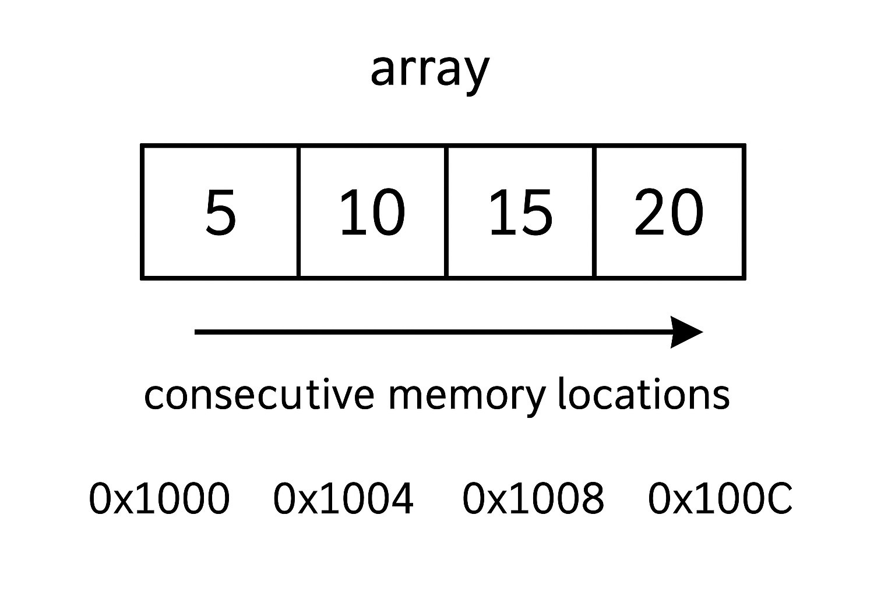
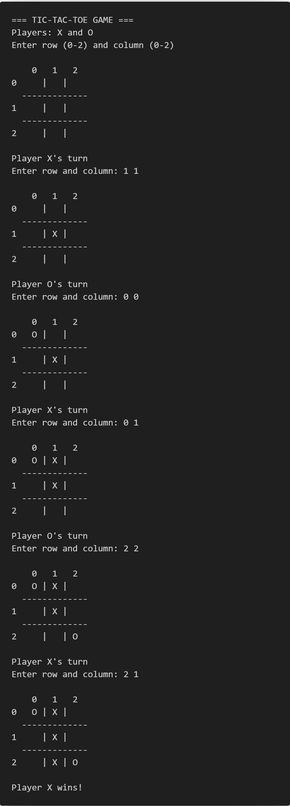

C Programming Tutorial for Beginners: Complete 50-Hour Guide from Scratch
Total Duration: 50 Hours | 17 Chapters | 2-3 Hours Per Chapter
This C programming tutorial for beginners is your complete roadmap to mastering the C language from absolute scratch. Designed as a comprehensive 50-hour course with 17 structured chapters, this beginner-friendly C programming guide covers everything from basic syntax to advanced topics like pointers, structures, and file I/O. Whether you're starting your programming journey, preparing for technical interviews, or strengthening your coding fundamentals, this step-by-step C tutorial provides hands-on examples, practice exercises, and detailed explanations to transform you into a confident C programmer.
Learning Objectives
Chapter 1 - Introduction to C Programming
Chapter 2 - Your First C Program - Hello World
Chapter 3 - Variables and Constants
Chapter 4 - Operators
Chapter 5 - Input and Output
Chapter 6 - Conditional Statements - if, else
Chapter 7 - Switch Statement
Chapter 8 - Loops - for Loop
Chapter 9 - while and do-while Loops
Chapter 10 - Functions
Chapter 11 - Recursion
Chapter 12 - Arrays - 1D Arrays
Chapter 13 - 2D Arrays
Chapter 14 - Strings
Chapter 15 - Pointers
Chapter 16 - Structures & Unions
Chapter 17 - File I/O Basics
Chapter 1: Introduction to C Programming
What is C Programming?
C is a general-purpose programming language created by Dennis Ritchie at Bell Labs in 1972. It’s called the “mother of all programming languages” because many modern languages are based on C.
Why Learn C?
- Foundation language: Understanding C makes learning other languages easier.
- Fast execution: C programs run very quickly.
- System programming: Used for operating systems, embedded systems.
- Portable: C programs can run on different computers with minimal changes.
Key Features of C
| Feature | Description |
|---|---|
| Simple | Easy to learn and understand |
| Fast | Compiled language, executes quickly |
| Portable | Code works on different systems |
| Low-level access | Can work directly with memory |
| Rich library | Many built-in functions available |
Setting Up C Programming Environment:
Step 1: Install a C Compiler
For Windows Users
Option A: Code::Blocks (Recommended for Beginners)
- Go to codeblocks.org.
- Download "codeblocks-20.03mingw-setup.exe" (includes compiler).
- Run the installer and follow the setup wizard.
- Choose default installation settings.
- Launch Code::Blocks to verify installation.
Option B: Dev-C++
- Visit sourceforge.net/projects/orwelldevcpp.
- Download the latest version.
- Install with default settings.
- Open Dev-C++ to confirm it works.
Option C: Visual Studio (Advanced)
- Download Visual Studio Community (free).
- During installation, select "Desktop development with C++".
- This includes the MSVC compiler.
For Mac Users
Option A: Xcode (Complete IDE)
- Open App Store.
- Search for "Xcode".
- Click Install (it's free but large ~10GB).
- Once installed, open Terminal and type:
xcode-select --install. - This installs command-line tools including
gcc.
Option B: Terminal with Homebrew (Lightweight)
- Open Terminal (Applications → Utilities → Terminal).
- Install Homebrew by pasting:
- Install gcc:
brew install gcc. - Verify:
gcc --version.
/bin/bash -c "$(curl -fsSL https://raw.githubusercontent.com/Homebrew/install/HEAD/install.sh)"
For Linux Users
Most Linux distributions come with gcc pre-installed
Check if gcc is installed:
gcc --version
If not installed:
- Ubuntu/Debian: sudo apt update && sudo apt install build-essential
- CentOS/RHEL: sudo yum install gcc
- Fedora: sudo dnf install gcc
- Arch Linux: sudo pacman -S gcc
Basic Structure of a C Program
#include <stdio.h>
int main() {
// Your code goes here
return 0;
}
Breakdown
main: The Entry Point of the Programint: The Return Type
Every C program must have a main function.
It is the designated starting block where the program's execution begins and, typically,
where it ends.
The int before main specifies the return type of the function. It's a
promise that the main function will return
an integer value to the operating system when it has finished executing
Line-by-Line Explanation:
| Line | Purpose |
|---|---|
#include <stdio.h>
|
Includes standard input/output functions |
int main()
|
Main function where program execution begins |
{ |
Opening brace - starts the function |
return 0;
|
Returns 0 to indicate successful program completion |
} |
Closing brace - ends the function |
Practice Exercises
Exercise 1: Identify the parts of a C program structure.
Exercise 2: What does #include <stdio.h>
do?
Answers:
Answer 1: C program has: header files (#include), main
function (int main()),
opening/closing braces {}, and return statement.
Answer 2: #include <stdio.h>
includes the standard input/output library that contains functions like printf()and scanf().
Chapter 2: Your First C Program - Hello World
What is “Hello World”?
“Hello World” is traditionally the first program every programmer writes. It simply displays the text “Hello World” on the screen.
Code Example 1: Basic Hello World
#include <stdio.h>
int main() {
printf("Hello World!");
return 0;
}
Output
Hello World!
Line-by-Line Explanation:
| Line | Purpose |
|---|---|
#include <stdio.h>
|
Includes standard I/O library |
int main() { |
Main function where program execution begins |
printf("Hello World!");
|
Prints text to screen |
return 0; |
Program ends successfully |
} |
End of main function |
Code Example 2: Hello World with New Line
#include <stdio.h>
int main() {
printf("Hello World!\n");
printf("Welcome to C Programming!");
return 0;
}
Output
Hello World!
Welcome to C Programming!
Understanding \n:
\nis called an escape sequence- It creates a new line (like pressing Enter)
- Always put it inside the quotes
Code Example 3: Multiple Lines at Once
#include <stdio.h>
int main() {
printf("Hello World!\nWelcome to C Programming!\nLet's start learning!");
return 0;
}
Output
Hello World!
Welcome to C Programming!
Let's start learning!
Common Escape Sequences
| Escape Sequence | Purpose | Example |
|---|---|---|
\n |
New line | printf("Line 1\nLine 2");
|
\t |
Tab space | printf("Name:\tJohn");
|
\" |
Double quote | printf("He said \"Hello\"");
|
\\ |
Backslash | printf("C:\\Users\\");
|
Practice Exercises
Exercise 1: Write a program that prints your name and age on separate lines.
Exercise 2: Create a program that displays a simple menu:
=== MAIN MENU ===
1. Start Game
2. Settings
3. Exit
Answers:
Answer 1:
#include <stdio.h>
int main() {
printf("My name is John\n");
printf("I am 20 years old");
return 0;
}
Output
My name is John
I am 20 years old
Answer 2:
#include <stdio.h>
int main() {
printf("=== MAIN MENU ===\n");
printf("1. Start Game\n");
printf("2. Settings\n");
printf("3. Exit");
return 0;
}
Output
=== MAIN MENU ===
1. Start Game
2. Settings
3. Exit
Chapter 3: Variables and Constants
What are Variables?
A variable is like a container that stores data. Think of it as a labeled box where you can put different values.
Variable Declaration
data_type variable_name;
Basic Data Types in C
| Data Type | Description | Size | Example |
|---|---|---|---|
int |
Whole numbers | 4 bytes | 42, -15, 0 |
float |
Decimal numbers | 4 bytes | 3.14, -2.5 |
char |
Single character | 1 bytes | 'A', '7', '@' |
double |
Large decimal numbers | 8 bytes | 3.141592653 |
Code Example 1: Declaring and Using Variables
#include <stdio.h>
int main() {
int age; // Declare an integer variable
float height; // Declare a float variable
char grade; // Declare a character variable
age = 20; // Assign value to age
height = 5.8; // Assign value to height
grade = 'A'; // Assign value to grade
printf("Age: %d\n", age);
printf("Height: %.1f feet\n", height);
printf("Grade: %c\n", grade);
return 0;
}
Output
Age: 20
Height: 5.8 feet
Grade: A
Format Specifiers Explanation:
In C programming, format specifiers are essential placeholders used in input and output functions
(like printf()and scanf()) to define the type of data being
printed or read. They act as a bridge between the raw binary data stored in variables and the
human-readable text displayed on the screen.
| Format Specifier | Data Type | Purpose |
|---|---|---|
%d |
int | Display integer |
%f |
float | Display floating-point number |
%.1f |
float | Display float with 1 decimal place |
%c |
char | Display single character |
%s |
string | Display string (text) |
Why Format Specifiers are Necessary
- Computers store data in binary format (1s and 0s).
- The
printf()andscanf()functions need to know how to interpret this binary data and convert it into a meaningful format for display or storage.
Declare a variable
int age = 25;
The integer 25 is stored in memory as 00011001. Without instructions, the computer doesn't know if this binary sequence represents:
- The decimal number 25.
- The ASCII character for the "End of Medium" symbol.
- A part of a floating-point number.
- A memory address.
Format specifiers solve this problem by telling the compiler exactly how to treat the data.
Code Example 2: Variable Initialization
#include <stdio.h>
int main() {
// Declare and initialize in one line
int students = 30;
float price = 99.99;
char initial = 'J';
printf("Number of students: %d\n", students);
printf("Price: Rs.%.2f\n", price);
printf("First initial: %c\n", initial);
return 0;
}
Output
Number of students: 30
Price: Rs.99.99
First initial: J
Constants in C
Constants are values that cannot be changed during program execution.
Method 1: Using const keyword
#include <stdio.h>
int main() {
const float PI = 3.14159;
const int DAYS_IN_WEEK = 7;
printf("Value of PI: %.5f\n", PI);
printf("Days in a week: %d\n", DAYS_IN_WEEK);
// PI = 3.14; // This would cause an error!
return 0;
}
Output
Value of PI: 3.14159
Days in a week: 7
Method 2: Using #define
In C, the #define directive is a simple
instruction used to create a macro, which tells the preprocessor to replace a specific name
with a given value or piece of code before the program is compiled.
Think of it as setting up an automatic "find and replace" rule for your code.
#include <stdio.h>
#define MAX_STUDENTS 50
#define SCHOOL_NAME "ABC High School"
int main() {
printf("School: %s\n", SCHOOL_NAME);
printf("Maximum students allowed: %d\n", MAX_STUDENTS);
return 0;
}
Output
School: ABC High School
Maximum students allowed: 50
Variable Naming Rules
In C programming, format specifiers are essential placeholders used in input and output functions
(like printf()and scanf()) to define the type of data being
printed or read. They act as a bridge between the raw binary data stored in variables and the
human-readable text displayed on the screen.
| Rule | Valid Example | Invalid Example |
|---|---|---|
| Start with letter or underscore | age, _count |
2age, #count |
| Use letters, digits, underscore only | student_1, total_marks |
student-1, total marks |
| Case sensitive | Age ≠ age |
- |
| No keywords | number, value |
int, return |
Practice Exercises
Exercise 1: Create a program that stores information about a book (title initial, number of pages, price) and displays it.
Exercise 2: Write a program to calculate and display the area of a rectangle using variables for length and width.
Answers:
Answer 1:
#include <stdio.h>
int main() {
char title_initial = 'H';
int pages = 350;
float price = 29.99;
printf("Book title starts with: %c\n", title_initial);
printf("Number of pages: %d\n", pages);
printf("Price: $%.2f\n", price);
return 0;
}
Output
Book title starts with: H
Number of pages: 350
Price: $29.99
Answer 2:
#include <stdio.h>
int main() {
float length = 10.5;
float width = 6.2;
float area;
area = length * width;
printf("Length: %.1f meters\n", length);
printf("Width: %.1f meters\n", width);
printf("Area: %.2f square meters\n", area);
return 0;
}
Output
Length: 10.5 meters
Width: 6.2 meters
Area: 65.10 square meters
Chapter 4: Operators
What are Operators?
Operators are symbols that perform operations on variables and values. Think of them as mathematical symbols like +, -, x, ÷.
Types of Operators
1. Arithmetic Operators
Arithmetic operators are used to perform common mathematical operations.
| Operator | Name | Example | Result |
|---|---|---|---|
+ |
Addition | 5 + 3 | 8 |
- |
Subtraction | 5 - 3 | 2 |
* |
Multiplication | 5 * 3 | 15 |
/ |
Division | 6 / 3 | 2 |
% |
Modulus (remainder) | 7 % 3 | 1 |
++ |
Increment | x++ | Increases x by 1 |
-- |
Decrement | x-- | Decreases x by 1 |
Code Example 1: Basic Arithmetic Operations
#include <stdio.h>
int main() {
int a = 15;
int b = 4;
printf("a = %d, b = %d\n", a, b);
printf("a + b = %d\n", a + b);
printf("a - b = %d\n", a - b);
printf("a * b = %d\n", a * b);
printf("a / b = %d\n", a / b); // Integer division
printf("a %% b = %d\n", a % b); // Remainder
return 0;
}
Output
a = 15, b = 4
a + b = 19
a - b = 11
a * b = 60
a / b = 3
a % b = 3
Important Note about Division:
- Integer division
(
15 \ 4 = 3) drops the decimal part - For decimal results, use
floatordouble.
Code Example 2: Float Division and Increment/Decrement
#include <stdio.h>
int main() {
float x = 15.0;
float y = 4.0;
int count = 5;
printf("Float division: %.2f / %.2f = %.2f\n", x, y, x/y);
printf("Original count: %d\n", count);
count++; // Increment by 1
printf("After increment: %d\n", count);
count--; // Decrement by 1
printf("After decrement: %d\n", count);
return 0;
}
Output
Float division: 15.00 / 4.00 = 3.75
Original count: 5
After increment: 6
After decrement: 5
2. Relational (Comparison) Operators
Comparison operators are used to compare two values (or variables). This is important in programming, because it helps us to find answers and make decisions.
| Operator | Name | Example | Returns |
|---|---|---|---|
== |
Equal to | 5 == 3 | 0 (False) |
!= |
Not equal | 5 != 3 | 1 (True) |
> |
Greater than | 5 > 3 | 1 (True) |
< |
Less than | 5 < 3 | 0 (False) |
>= |
Greater than or equal | 5 >= 5 | 1 (True) |
<= |
Less than or equal | 3 <= 5 | 1 (True) |
Code Example 3: Relational Operators
#include <stdio.h>
int main() {
int x = 10;
int y = 20;
printf("x = %d, y = %d\n", x, y);
printf("x == y: %d\n", x == y); // False = 0
printf("x != y: %d\n", x != y); // True = 1
printf("x > y: %d\n", x > y); // False = 0
printf("x < y: %d\n", x < y); // True = 1
printf("x >= y: %d\n", x >= y); // False = 0
printf("x <= y: %d\n", x <= y); // True = 1
return 0;
}
Output
x = 10, y = 20
x == y: 0
x != y: 1
x > y: 0
x < y: 1
x >= y: 0
x <= y: 1
3. Logical Operators
Logical operators are used to determine the logic between variables or values, by combining multiple conditions.
| Operator | Name | Example | Description |
|---|---|---|---|
&& |
AND | (5 > 3) && (2 < 4) | True if both conditions are true |
|| |
OR | (5 > 3) || (2 > 4) | True if at least one condition is true |
! |
NOT | !(5 > 3) | Reverses the result |
Code Example 4: Logical Operator
#include <stdio.h>
int main() {
int age = 25;
int income = 30000;
printf("Age: %d, Income: %d\n", age, income);
// AND operator
printf("Eligible for loan (age >= 18 AND income >= 25000): %d\n",
(age >= 18) && (income >= 25000));
// OR operator
printf("Special discount (age < 18 OR age > 60): %d\n",
(age < 18) || (age > 60));
// NOT operator
printf("Not a senior citizen (age < 65): %d\n", !(age >= 65));
return 0;
}
Output
Age: 25, Income: 30000
Eligible for loan (age >= 18 AND income >= 25000): 1
Special discount (age < 18 OR age> 60): 0
Not a senior citizen (age < 65): 1
4. Assignment Operators
Assignment operators are used to assign values to variables.
| Operator | Example | Equivalent To |
|---|---|---|
= |
x = 5 | Assign 5 to x |
+= |
x += 3 | x = x + 3 |
-= |
x -= 2 | x = x - 2 |
*= |
x *= 4 | x = x * 4 |
/= |
x /= 2 | x = x / 2 |
%= |
x %= 3 | x = x % 3 |
Code Example 5: Assignment Operators
#include <stdio.h>
int main() {
int num = 10;
printf("Initial value: %d\n", num);
num += 5; // num = num + 5
printf("After += 5: %d\n", num);
num -= 3; // num = num - 3
printf("After -= 3: %d\n", num);
num *= 2; // num = num * 2
printf("After *= 2: %d\n", num);
num /= 4; // num = num / 4
printf("After /= 4: %d\n", num);
num %= 3; // num = num % 3
printf("After %= 3: %d\n", num);
return 0;
}
Output
Initial value: 10
After += 5: 15
After -= 3: 12
After *= 2: 24
After /= 4: 6
After %= 3: 0
Operator Precedence
When multiple operators are used, C follows a specific order:
| Priority | Operators | Example |
|---|---|---|
| 1 (Highest) | () | (a + b) * c |
| 2 | ++, --, ! |
++x, !flag |
| 3 | *, /, % |
a * b / c |
| 4 | +, - |
a + b - c |
| 5 | <, <=, >, >= |
a < b |
| 6 | ==, != |
a == b |
| 7 | && |
a && b |
| 8 | || |
a || b |
| 9 (Lowest) | =, +=, -=, etc. |
a = b + c |
Practice Exercises
Exercise 1: Write a program that calculates the average of three numbers using variables and arithmetic operators.
Exercise 2: Create a program that checks if a number is even or odd using the modulus operator.
Answers:
Answer 1:
#include <stdio.h>
int main() {
float num1 = 85.5;
float num2 = 92.0;
float num3 = 78.5;
float average;
average = (num1 + num2 + num3) / 3;
printf("Number 1: %.1f\n", num1);
printf("Number 2: %.1f\n", num2);
printf("Number 3: %.1f\n", num3);
printf("Average: %.2f\n", average);
return 0;
}
Output
Number 1: 85.5
Number 2: 92.0
Number 3: 78.5
Average: 85.33
Answer 2:
#include <stdio.h>
int main() {
int number = 17;
int remainder;
remainder = number % 2;
printf("Number: %d\n", number);
printf("Remainder when divided by 2: %d\n", remainder);
if (remainder == 0) {
printf("The number is EVEN\n");
} else {
printf("The number is ODD\n");
}
return 0;
}
Output
Number: 17
Remainder when divided by 2: 1
Number 3: 78.5
The number is ODD
Chapter 5: Input and Output
Input and Output (I/O) in C programming are fundamental operations that allow programs to communicate with the outside world. Input refers to receiving data into a program, while output refers to sending data from a program to external destinations.
What is Input and Output?
- Input: The process of feeding data or information into a program from external sources (keyboard, files, network, etc.)
- Output: The process of displaying or sending data from a program to external destinations (screen, files, printer, etc.)
In C, I/O operations are handled through functions provided in the stdio.h (Standard Input/Output) header file.
Output with printf()
We've already used printf() to display text. Let's explore it in
detail.
printf("format string", variables);
Code Example 1: Different Format Specifiers
#include <stdio.h>
int main() {
int age = 25;
float height = 5.9;
char grade = 'A';
printf("Age: %d years\n", age);
printf("Height: %.1f feet\n", height);
printf("Grade: %c\n", grade);
printf("Height with 3 decimals: %.3f\n", height);
return 0;
}
Output
Age: 25 years
Height: 5.9 feet
Grade: A
Height with 3 decimals: 5.900
Format Specifiers Reference:
| Specifier | Data Type | Description | Example |
|---|---|---|---|
%d |
int | Integer | %d → 123 |
%f |
float/double | Floating point | %f → 3.140000 |
%.2f |
float/double | 2 decimal places | %.2f → 3.14 |
%c |
char | Single character | %c → A |
%s |
char[] | String | %s → Hello |
%x |
int | Hexadecimal | %x → 1a |
%o |
int | Octal | %o → 17 |
Input with scanf()
scanf() is used to get
input from the user.
scanf("format", &variables);
Code Example 2: Getting User Input
#include <stdio.h>
int main() {
int age;
float salary;
char grade;
printf("Enter your age: ");
scanf("%d", &age);
printf("Enter your salary: ");
scanf("%f", &salary);
printf("Enter your grade: ");
scanf(" %c", &grade); // Note the space before %c
printf("\n--- Your Information ---\n");
printf("Age: %d years\n", age);
printf("Salary: $%.2f\n", salary);
printf("Grade: %c\n", grade);
return 0;
}
Output
Enter your age: 28
Enter your salary: 45000.50
Enter your grade: B
--- Your Information ---
Age: 28 years
Salary: $45000.50
Grade: B
Line-by-Line Explanation:
| Line | Explanation |
|---|---|
scanf("%d",&age);
|
Read integer and store in age |
&age |
& gets the memory address of age |
scanf("%c",&grade);
|
Space before %c clears any leftover characters |
printf("\n--- Your Information ---\n");
|
\n creates new lines |
Code Example 3: Multiple Inputs at Once
#include <stdio.h>
int main() {
int day, month, year;
printf("Enter date (DD MM YYYY): ");
scanf("%d %d %d", &day, &month, &year);
printf("You entered: %02d/%02d/%d\n", day, month, year);
// %02d means: 2 digits, fill with 0 if needed
return 0;
}
Output
Enter date (DD MM YYYY): 5 3 2024
You entered: 05/03/2024
Getting String Input
For strings, we use %s and don't need &:
#include <stdio.h>
int main() {
char name[50]; // Array to store string
int age;
printf("Enter your name: ");
scanf("%s", name); // No & needed for strings
printf("Enter your age: ");
scanf("%d", &age);
printf("Hello %s, you are %d years old!\n", name, age);
return 0;
}
Output
Enter your name: John
Enter your age: 25
Hello John, you are 25 years old!
Code Example 4: Interactive Calculator
#include <stdio.h>
int main() {
float num1, num2, result;
char operator;
printf("=== Simple Calculator ===\n");
printf("Enter first number: ");
scanf("%f", &num1);
printf("Enter operator (+, -, *, /): ");
scanf(" %c", &operator);
printf("Enter second number: ");
scanf("%f", &num2);
// Perform calculation based on operator
if (operator == '+') {
result = num1 + num2;
} else if (operator == '-') {
result = num1 - num2;
} else if (operator == '*') {
result = num1 * num2;
} else if (operator == '/') {
result = num1 / num2;
}
printf("%.2f %c %.2f = %.2f\n", num1, operator, num2, result);
return 0;
}
Output
=== Simple Calculator ===
Enter first number: 15.5
Enter operator (+, -, *, /): *
Enter second number: 2.5
15.50 * 2.50 = 38.75
Common Input/Output Mistakes and Solutions
Problem 1: Reading Characters After Numbers
// Wrong way
scanf("%d", &num);
scanf("%c", &ch); // This might not work correctly
// Correct way
scanf("%d", &num);
scanf(" %c", &ch); // Note the space before %c
Problem 2: String Input with Spaces
// scanf() stops at spaces
scanf("%s", name); // Input: "John Smith" → Only gets "John"
// Solution: Use gets() or fgets()
gets(name); // Gets entire line including spaces
Practice Exercises
Exercise 1: Write a program that asks for the user's name, age, and favorite number, then displays them in a formatted way.
Exercise 2: Create a program that calculates the area and perimeter of a rectangle by getting length and width from the user.
Answers:
Answer 1:
#include <stdio.h>
int main() {
char name[50];
int age;
int fav_number;
printf("Enter your name: ");
scanf("%s", name);
printf("Enter your age: ");
scanf("%d", &age);
printf("Enter your favorite number: ");
scanf("%d", &fav_number);
printf("\n=== Your Profile ===\n");
printf("Name: %s\n", name);
printf("Age: %d years old\n", age);
printf("Favorite Number: %d\n", fav_number);
return 0;
}
Output
Enter your name: John
Enter your age: 24
Enter your favorite number: 3
=== Your Profile ===
Name: John
Age: 24 years old
Favorite Number: 3
Answer 2:
#include <stdio.h>
int main() {
float length, width, area, perimeter;
printf("Enter rectangle length: ");
scanf("%f", &length);
printf("Enter rectangle width: ");
scanf("%f", &width);
area = length * width;
perimeter = 2 * (length + width);
printf("\n=== Rectangle Information ===\n");
printf("Length: %.2f units\n", length);
printf("Width: %.2f units\n", width);
printf("Area: %.2f square units\n", area);
printf("Perimeter: %.2f units\n", perimeter);
return 0;
}
Output
Enter rectangle length: 12
Enter rectangle width: 4
=== Rectangle Information ===
Length: 12.00 units
Width: 4.00 units
Area: 48.00 square units
Perimeter: 32.00 units
Chapter 6: Conditional Statements - if, else
What are Conditional Statements?
Conditional statements allow programs to make decisions. They execute different code blocks based on whether conditions are true or false.
Think of it like: “IF it's raining, THEN take an umbrella, ELSE wear sunglasses.”
Basic if Statement
Syntax:
if (condition) {
// Code to execute if condition is true
}
Code Example 1: Simple if Statement
#include <stdio.h>
int main() {
int age;
printf("Enter your age: ");
scanf("%d", &age);
if (age >= 18) {
printf("You are eligible to vote!\n");
}
printf("Program ended.\n");
return 0;
}
Output
Enter your age: 20
You are eligible to vote!
Program ended.
If age was 16:
Output
Enter your age: 16
Program ended.
How it Works:
| Condition | Result | Action |
|---|---|---|
age >= 18
is TRUE |
Condition met | Execute the code inside {} |
age >= 18
is FALSE |
Condition not met | Skip the code inside {} |
if-else Statement
Syntax:
if (condition) {
// Code to execute if condition is true
}
Code Example 2: if-else Statement
#include <stdio.h>
int main() {
int number;
printf("Enter a number: ");
scanf("%d", &number);
if (number % 2 == 0) {
printf("%d is an EVEN number.\n", number);
} else {
printf("%d is an ODD number.\n", number);
}
return 0;
}
Output
Enter a number: 8
8 is an EVEN number.
Output
Enter a number: 7
7 is an ODD number.
Flow Chart Explanation:
| Step | Check | Action |
|---|---|---|
| 1 | Is number % 2 == 0?
|
If YES → “EVEN number” |
| 2 | If NO from step 1 | Execute else → “ODD number” |
if-else if-else Statement
For multiple conditions, use else if:
Syntax:
if (condition1) {
// Code for condition1
} else if (condition2) {
// Code for condition2
} else if (condition3) {
// Code for condition3
} else {
// Code if none of the above conditions are true
}
Code Example 3: Grade Calculator
#include <stdio.h>
int main() {
int marks;
printf("Enter your marks (0-100): ");
scanf("%d", &marks);
if (marks >= 90) {
printf("Grade: A+ (Excellent!)\n");
} else if (marks >= 80) {
printf("Grade: A (Very Good!)\n");
} else if (marks >= 70) {
printf("Grade: B (Good!)\n");
} else if (marks >= 60) {
printf("Grade: C (Average)\n");
} else if (marks >= 50) {
printf("Grade: D (Pass)\n");
} else {
printf("Grade: F (Fail)\n");
}
return 0;
}
Output
Enter your marks (0-100): 85
Grade: A (Very Good!)
Grade System Table:
| Marks Range | Grade | Message |
|---|---|---|
| 90-100 | A+ | Excellent! |
| 80-89 | A | Very Good! |
| 70-79 | B | Good! |
| 60-69 | C | Average |
| 50-59 | D | Pass |
| 0-49 | F | Fail |
Nested if Statements
You can put if statements inside other if statements:
Code Example 4: Nested if - Login System
#include <stdio.h>
int main() {
int user_id;
int password;
int age;
printf("Enter User ID: ");
scanf("%d", &user_id);
if (user_id == 1234) {
printf("Enter Password: ");
scanf("%d", &password);
if (password == 9999) {
printf("Enter your age: ");
scanf("%d", &age);
if (age >= 18) {
printf("Access GRANTED! Welcome!\n");
} else {
printf("Access DENIED! Must be 18 or older.\n");
}
} else {
printf("Wrong password!\n");
}
} else {
printf("Invalid User ID!\n");
}
return 0;
}
Output(Success)
Enter User ID: 1234
Enter Password: 9999
Enter your age: 25
Access GRANTED! Welcome!
Output(Wrong Password)
Enter User ID: 1234
Enter Password: 1111
Wrong password!
Logical Operators in Conditions
AND Operator (&&)
Both conditions must be true:
#include <stdio.h>
int main() {
int age;
int income;
printf("Enter age: ");
scanf("%d", &age);
printf("Enter monthly income: ");
scanf("%d", &income);
if (age >= 21 && income >= 30000) {
printf("You qualify for a premium credit card!\n");
} else {
printf("You don't qualify for premium credit card.\n");
}
return 0;
}
OR Operator (||)
At least one condition must be true:
#include <stdio.h>
int main() {
int age;
printf("Enter your age: ");
scanf("%d", &age);
if (age < 13 || age > 65) {
printf("You get a special discount!\n");
} else {
printf("Regular price applies.\n");
}
return 0;
}
Code Example 5: Complex Conditions - ATM System
#include <stdio.h>
int main() {
int pin = 1234; // Correct PIN
int balance = 5000; // Account balance
int entered_pin;
int withdraw_amount;
printf("=== ATM System ===\n");
printf("Enter your PIN: ");
scanf("%d", &entered_pin);
if (entered_pin == pin) {
printf("PIN Correct!\n");
printf("Current balance: $%d\n", balance);
printf("Enter withdrawal amount: ");
scanf("%d", &withdraw_amount);
if (withdraw_amount > 0 && withdraw_amount <= balance) {
balance = balance - withdraw_amount;
printf("Transaction successful!\n");
printf("Withdrawn: $%d\n", withdraw_amount);
printf("Remaining balance: $%d\n", balance);
} else if (withdraw_amount > balance) {
printf("Insufficient funds!\n");
} else {
printf("Invalid amount!\n");
}
} else {
printf("Wrong PIN! Access denied.\n");
}
return 0;
}
Code Structure Overview
#include <stdio.h>
int main() {
// Code goes here
return 0;
}
This is a basic C program structure that every C program needs.
Step-by-Step Code Explanation
- Header File and Program Start
#include <stdio.h>: This tells the computer to include functions for input (reading) and output (displaying) operations.int main(): This is where your program starts executing - like the main entrance to your program.- Variable Declarations
pin = 1234: Stores the correct PIN number (like your ATM card's secret code).balance = 5000: Stores how much money is in the account (starts with $5000).entered_pin: Will store whatever PIN the user types in.withdraw_amount: Will store how much money the user wants to withdraw.- Getting User Input (PIN Entry)
printf(): Displays text on the screen.scanf("%d", &entered_pin): Waits for user to type a number and stores it inentered_pin.- The & symbol means "store the input IN this variable".
- PIN Verification (First Decision)
==means "is equal to" (comparison).- If the PIN matches: user gets access to their account.
- If the PIN is wrong: user is denied access.
- Banking Operations (Inside Correct PIN Block)
- Shows "PIN Correct!" message.
- Displays current balance ($5000).
- Asks user how much money they want to withdraw.
- Withdrawal Logic (Nested Decisions)
- Valid Withdrawal
(withdraw_amount > 0 && withdraw_amount <= balance): - Amount is positive AND less than or equal to balance.
- Subtracts money from balance:
balance = balance - withdraw_amount. - Shows success message and new balance
- Insufficient Funds
(withdraw_amount > balance): - User wants more money than they have.
- Shows "Insufficient funds!" message.
- Invalid Amount (anything else):
- User entered 0 or negative number.
- Shows "Invalid amount!" message.
#include <stdio.h>
int main() {
}
int pin = 1234; // Correct PIN
int balance = 5000; // Account balance
int entered_pin;
int withdraw_amount;
printf("=== ATM System ===\n");
printf("Enter your PIN: ");
scanf("%d", &entered_pin);
if (entered_pin == pin) {
// PIN is correct - do banking operations
} else {
printf("Wrong PIN! Access denied.\n");
}
printf("PIN Correct!\n");
printf("Current balance: $%d\n", balance);
printf("Enter withdrawal amount: ");
scanf("%d", &withdraw_amount);
if (withdraw_amount > 0 && withdraw_amount <= balance) {
balance = balance - withdraw_amount;
printf("Transaction successful!\n");
printf("Withdrawn: $%d\n", withdraw_amount);
printf("Remaining balance: $%d\n", balance);
} else if (withdraw_amount > balance) {
printf("Insufficient funds!\n");
} else {
printf("Invalid amount!\n");
}
Three possible scenarios:
Example Program Flow
Let's see how this works with examples:
Scenario 1: Successful Transaction
Output
=== ATM System ===
Enter your PIN: 1234
PIN Correct!
Current balance: $5000
Enter withdrawal amount: 1000
Transaction successful!
Withdrawn: $1000
Remaining balance: $4000
Scenario 2: Wrong PIN
Output
=== ATM System ===
Enter your PIN: 1111
Wrong PIN! Access denied.
Scenario 3: Insufficient Funds
Output
=== ATM System ===
Enter your PIN: 1234
PIN Correct!
Current balance: $5000
Enter withdrawal amount: 6000
Insufficient funds!
Scenario 4: Invalid Amount
Output
=== ATM System ===
Enter your PIN: 1234
PIN Correct!
Current balance: $5000
Enter withdrawal amount: -500
Invalid amount!
Common Mistakes and Best Practices
Mistake 1: Using = instead of ==
// Wrong
if (x = 5) { // This assigns 5 to x, doesn't compare!
// Correct
if (x == 5) { // This compares x with 5
Mistake 2: Missing Braces
// Risky (only first line is in if block)
if (age >= 18)
printf("You can vote\n");
printf("You are an adult\n"); // This always executes!
// Better (use braces)
if (age >= 18) {
printf("You can vote\n");
printf("You are an adult\n");
}
Practice Exercises
Exercise 1: Write a program that takes three numbers from the user and finds the largest one.
Exercise 2: Create a simple calculator that takes two numbers and an operator (+, -, *, /) and performs the calculation. Handle division by zero.
Answers:
Answer 1:
#include <stdio.h>
int main() {
float num1, num2, num3;
printf("Enter three numbers: ");
scanf("%f %f %f", &num1, &num2, &num3);
if (num1 >= num2 && num1 >= num3) {
printf("%.2f is the largest number.\n", num1);
} else if (num2 >= num1 && num2 >= num3) {
printf("%.2f is the largest number.\n", num2);
} else {
printf("%.2f is the largest number.\n", num3);
}
return 0;
}
Output
Enter three numbers: 3 6 8
8.00 is the largest number.
Answer 2:
#include <stdio.h>
int main() {
float num1, num2, result;
char operator;
printf("Enter first number: ");
scanf("%f", &num1);
printf("Enter operator (+, -, *, /): ");
scanf(" %c", &operator);
printf("Enter second number: ");
scanf("%f", &num2);
if (operator == '+') {
result = num1 + num2;
printf("%.2f + %.2f = %.2f\n", num1, num2, result);
} else if (operator == '-') {
result = num1 - num2;
printf("%.2f - %.2f = %.2f\n", num1, num2, result);
} else if (operator == '*') {
result = num1 * num2;
printf("%.2f * %.2f = %.2f\n", num1, num2, result);
} else if (operator == '/') {
if (num2 != 0) {
result = num1 / num2;
printf("%.2f / %.2f = %.2f\n", num1, num2, result);
} else {
printf("Error: Division by zero is not allowed!\n");
}
} else {
printf("Error: Invalid operator!\n");
}
return 0;
}
Output
Enter first number: 15
Enter operator (+, -, *, /): *
Enter second number: 5
15.00 * 5.00 = 75.00
Chapter 7: Switch Statement
What is a Switch Statement?
The switch statement is used when you need to compare a variable against many different values. It's a cleaner alternative to multiple if-else if statements.
Think of it like a menu selector - you choose one option from many available options.
When to Use Switch vs if-else:
- Switch: When comparing ONE variable against multiple exact values.
- if-else: When using complex conditions with ranges or multiple variables.
Basic Switch Syntax
switch (variable) {
case value1:
// Code for value1
break;
case value2:
// Code for value2
break;
case value3:
// Code for value3
break;
default:
// Code if no cases match
}
Key Components:
| Component | Purpose |
|---|---|
switch(variable) |
Variable to compare |
case value: |
Specific value to match |
break; |
Exit the switch (prevents fall-through) |
default: |
Executes if no case matches (optional) |
Code Example 1: Simple Menu System
#include <stdio.h>
int main() {
int choice;
printf("=== Main Menu ===\n");
printf("1. Play Game\n");
printf("2. View Settings\n");
printf("3. View Help\n");
printf("4. Exit\n");
printf("Enter your choice (1-4): ");
scanf("%d", &choice);
switch (choice) {
case 1:
printf("Starting the game...\n");
break;
case 2:
printf("Opening settings menu...\n");
break;
case 3:
printf("Displaying help information...\n");
break;
case 4:
printf("Thank you for playing! Goodbye!\n");
break;
default:
printf("Invalid choice! Please enter 1-4.\n");
}
return 0;
}
Output
=== Main Menu ===
1. Play Game
2. View Settings
3. View Help
4. Exit
Enter your choice (1-4): 2
Opening settings menu...
If invalid input:
Output
Enter your choice (1-4): 7
Invalid choice! Please enter 1-4.
Code Example 2: Calculator Using Switch
#include <stdio.h>
int main() {
float num1, num2, result;
char operator;
printf("=== Calculator ===\n");
printf("Enter first number: ");
scanf("%f", &num1);
printf("Enter operator (+, -, *, /): ");
scanf(" %c", &operator);
printf("Enter second number: ");
scanf("%f", &num2);
switch (operator) {
case '+':
result = num1 + num2;
printf("%.2f + %.2f = %.2f\n", num1, num2, result);
break;
case '-':
result = num1 - num2;
printf("%.2f - %.2f = %.2f\n", num1, num2, result);
break;
case '*':
result = num1 * num2;
printf("%.2f * %.2f = %.2f\n", num1, num2, result);
break;
case '/':
if (num2 != 0) {
result = num1 / num2;
printf("%.2f / %.2f = %.2f\n", num1, num2, result);
} else {
printf("Error: Division by zero!\n");
}
break;
default:
printf("Error: Invalid operator!\n");
printf("Please use +, -, *, or /\n");
}
return 0;
}
Output
=== Calculator ===
Enter first number: 15.5
Enter operator (+, -, *, /): *
15.50 * 3.00 = 46.50
Switch with Character Cases
Code Example 2: Calculator Using Switch
#include <stdio.h>
int main() {
char grade;
printf("Enter your grade (A, B, C, D, F): ");
scanf(" %c", &grade);
switch (grade) {
case 'A':
case 'a': // Handle both uppercase and lowercase
printf("Excellent! You scored 90-100%%\n");
printf("Keep up the great work!\n");
break;
case 'B':
case 'b':
printf("Very Good! You scored 80-89%%\n");
printf("You're doing well!\n");
break;
case 'C':
case 'c':
printf("Good! You scored 70-79%%\n");
printf("There's room for improvement.\n");
break;
case 'D':
case 'd':
printf("Satisfactory. You scored 60-69%%\n");
printf("You need to study harder.\n");
break;
case 'F':
case 'f':
printf("Fail. You scored below 60%%\n");
printf("Don't give up! Try again.\n");
break;
default:
printf("Invalid grade! Please enter A, B, C, D, or F.\n");
}
return 0;
}
Output
Enter your grade (A, B, C, D, F): b
Very Good! You scored 80-89%
You're doing well!
What Happens Without break?
Fall-through behavior: If you forget break, the program continues to execute the next
cases.
#include <stdio.h>
int main() {
int day = 2;
printf("Day %d: ", day);
switch (day) {
case 1:
printf("Monday ");
case 2:
printf("Tuesday ");
case 3:
printf("Wednesday ");
case 4:
printf("Thursday ");
case 5:
printf("Friday ");
default:
printf("(Workday)\n");
}
return 0;
}
Output
Day 2: Tuesday Wednesday Thursday Friday (Workday)
With proper breaks:
switch (day) {
case 1:
printf("Monday\n");
break;
case 2:
printf("Tuesday\n");
break;
case 3:
printf("Wednesday\n");
break;
// ... and so on
}
Useful Fall-through Example
Sometimes fall-through is intentionally used:
#include <stdio.h>
int main() {
int month;
printf("Enter month number (1-12): ");
scanf("%d", &month);
switch (month) {
case 12:
case 1:
case 2:
printf("Winter season\n");
break;
case 3:
case 4:
case 5:
printf("Spring season\n");
break;
case 6:
case 7:
case 8:
printf("Summer season\n");
break;
case 9:
case 10:
case 11:
printf("Autumn season\n");
break;
default:
printf("Invalid month! Enter 1-12.\n");
}
return 0;
}
Code Example 5: ATM Machine Menu
#include <stdio.h>
int main() {
int choice;
float balance = 1500.00; // Starting balance
float amount;
printf("=== ATM Machine ===\n");
printf("Current Balance: $%.2f\n\n", balance);
printf("1. Check Balance\n");
printf("2. Deposit Money\n");
printf("3. Withdraw Money\n");
printf("4. Exit\n");
printf("Select an option: ");
scanf("%d", &choice);
switch (choice) {
case 1:
printf("\nYour current balance is: $%.2f\n", balance);
break;
case 2:
printf("Enter deposit amount: $");
scanf("%f", &amount);
if (amount > 0) {
balance += amount;
printf("$%.2f deposited successfully!\n", amount);
printf("New balance: $%.2f\n", balance);
} else {
printf("Invalid amount!\n");
}
break;
case 3:
printf("Enter withdrawal amount: $");
scanf("%f", &amount);
if (amount > 0 && amount <= balance) {
balance -= amount;
printf("$%.2f withdrawn successfully!\n", amount);
printf("Remaining balance: $%.2f\n", balance);
} else if (amount > balance) {
printf("Insufficient funds!\n");
} else {
printf("Invalid amount!\n");
}
break;
case 4:
printf("Thank you for using our ATM. Goodbye!\n");
break;
default:
printf("Invalid option! Please select 1-4.\n");
}
return 0;
}
Output
=== ATM Machine ===
Current Balance: $1500.00
1. Check Balance
2. Deposit Money
3. Withdraw Money
4. Exit
Select an option: 3
Enter withdrawal amount: $200
$200.00 withdrawn successfully!
Remaining balance: $1300.00
Switch vs if-else Comparison
| Aspect | Switch Statement | if-else Statement |
|---|---|---|
| Use Case | Multiple exact values | Complex conditions, ranges |
| Performance | Faster for many cases | Slower for many conditions |
| Readability | Cleaner for menus | Better for complex logic |
| Data Types | int, char, enum only |
Any data type |
| Conditions | Only equality (==) |
All operators (>, <, >=, etc.) |
Practice Exercises
Exercise 1: Create a program that converts numerical day (1-7) to day name (1=Monday, 2=Tuesday, etc.).
Exercise 2: Build a simple restaurant ordering system with at least 5 menu items, prices, and order confirmation.
Answers:
Answer 1:
#include <stdio.h>
int main() {
int day;
printf("Enter day number (1-7): ");
scanf("%d", &day);
switch (day) {
case 1:
printf("Monday\n");
break;
case 2:
printf("Tuesday\n");
break;
case 3:
printf("Wednesday\n");
break;
case 4:
printf("Thursday\n");
break;
case 5:
printf("Friday\n");
break;
case 6:
printf("Saturday\n");
break;
case 7:
printf("Sunday\n");
break;
default:
printf("Invalid day! Please enter 1-7.\n");
}
return 0;
}
Output
Enter day number (1-7): 3
Wednesday
Answer 2:
#include <stdio.h>
int main() {
int choice;
float total = 0;
printf("=== Restaurant Menu ===\n");
printf("1. Burger - $8.99\n");
printf("2. Pizza - $12.50\n");
printf("3. Pasta - $9.75\n");
printf("4. Salad - $6.25\n");
printf("5. Drinks - $2.50\n");
printf("6. Exit\n");
printf("Enter your choice: ");
scanf("%d", &choice);
switch (choice) {
case 1:
total += 8.99;
printf("Burger added to order!\n");
printf("Total: $%.2f\n", total);
break;
case 2:
total += 12.50;
printf("Pizza added to order!\n");
printf("Total: $%.2f\n", total);
break;
case 3:
total += 9.75;
printf("Pasta added to order!\n");
printf("Total: $%.2f\n", total);
break;
case 4:
total += 6.25;
printf("Salad added to order!\n");
printf("Total: $%.2f\n", total);
break;
case 5:
total += 2.50;
printf("Drinks added to order!\n");
printf("Total: $%.2f\n", total);
break;
case 6:
printf("Thank you for visiting!\n");
break;
default:
printf("Invalid choice! Please select 1-6.\n");
}
return 0;
}
Output
=== Restaurant Menu ===
1. Burger - $8.99
2. Pizza - $12.50
3. Pasta - $9.75
4. Salad - $6.25
5. Drinks - $2.50
6. Exit
Enter your choice: 3
Pasta added to order!
Total: $9.75
Chapter 8: Loops - for Loop
What are Loops?
Loops allow you to execute the same block of code multiple times without writing it repeatedly. Think of it like asking someone to"count from 1 to 10" - they repeat the counting process.
Types of Loops
- for loop - When you know how many times to repeat.
- while loop - When you repeat based on a condition.
- do-while loop - Similar to while, but executes at least once
for Loop Basics
Syntax:
for (initialization; condition; increment/decrement) {
// Code to repeat
}
Components:
| Component | Purpose | Example |
|---|---|---|
| Initialization | Starting point | i = 1
|
| Condition | When to continue | i <= 10
|
| Increment/Decrement | How to change | i++ or i-- |
Code Example 5: ATM Machine Menu
#include <stdio.h>
int main() {
int i;
printf("Counting from 1 to 5:\n");
for (i = 1; i <= 5; i++) {
printf("%d ", i);
}
printf("\nLoop finished!\n");
return 0;
}
Output
Counting from 1 to 5:
1 2 3 4 5
Loop finished!
How it Works Step by Step:
| Iteration | i value | Condition (i <= 5) | Action | |
|---|---|---|---|---|
| 1 | 1 | TRUE | Execute loop | 1 |
| 2 | 2 | TRUE | Execute loop | 2 |
| 3 | 3 | TRUE | Execute loop | 3 |
| 4 | 4 | TRUE | Execute loop | 4 |
| 5 | 5 | TRUE | Execute loop | 5 |
| 6 | 6 | FALSE | Exit loop | - |
Code Example 2: Counting Backwards
#include <stdio.h>
int main() {
int i;
printf("Countdown: ");
for (i = 10; i >= 1; i--) {
printf("%d ", i);
}
printf("Blast off! 🚀\n");
return 0;
}
Output
Countdown: 10 9 8 7 6 5 4 3 2 1 Blast off! 🚀
Code Example 3: Multiplication Table
#include <stdio.h>
int main() {
int number, i;
printf("Enter a number: ");
scanf("%d", &number);
printf("\nMultiplication table for %d:\n", number);
printf("========================\n");
for (i = 1; i <= 10; i++) {
printf("%d x %d = %d\n", number, i, number * i);
}
return 0;
}
Output
Enter a number: 7
Multiplication table for 7:
========================
7 x 1 = 7
7 x 2 = 14
7 x 3 = 21
7 x 4 = 28
7 x 5 = 35
7 x 6 = 42
7 x 7 = 49
7 x 8 = 56
7 x 9 = 63
7 x 10 = 70
Different Increment/Decrement Styles
Increment by Different Values:
#include <stdio.h>
int main() {
int i;
// Count by 2s
printf("Even numbers (2, 4, 6...): ");
for (i = 2; i <= 20; i += 2) {
printf("%d ", i);
}
printf("\n");
// Count by 5s
printf("Multiples of 5: ");
for (i = 5; i <= 50; i += 5) {
printf("%d ", i);
}
printf("\n");
return 0;
}
Output
Even numbers (2, 4, 6...): 2 4 6 8 10 12 14 16 18 20
Multiples of 5: 5 10 15 20 25 30 35 40 45 50
Nested for Loops
Nested loops are loops inside other loops:
Code Example 4: Creating Patterns
#include <stdio.h>
int main() {
int i, j;
printf("Right triangle pattern:\n");
for (i = 1; i <= 5; i++) { // Outer loop for rows
for (j = 1; j <= i; j++) { // Inner loop for stars in each row
printf("* ");
}
printf("\n"); // New line after each row
}
return 0;
}
Output
Right triangle pattern:
*
* *
* * *
* * * *
* * * * *
How Nested Loops Work:
| Outer Loop (i) | Inner Loop (j) | Stars Printed | Output |
|---|---|---|---|
| 1 | 1 | 1 star | * |
| 2 | 1, 2 | 2 stars | * * |
| 3 | 1, 2, 3 | 3 stars | * * * |
| 4 | 1, 2, 3, 4 | 4 stars | * * * * |
| 5 | 1, 2, 3, 4, 5 | 5 stars | * * * * * |
Code Example 5: Number Square Pattern
#include <stdio.h>
int main() {
int i, j;
int size;
printf("Enter size of square: ");
scanf("%d", &size);
printf("\nNumber square pattern:\n");
for (i = 1; i <= size; i++) {
for (j = 1; j <= size; j++) {
printf("%d ", j);
}
printf("\n");
}
return 0;
}
Output
Enter size of square: 4
Number square pattern:
1 2 3 4
1 2 3 4
1 2 3 4
1 2 3 4
Practical Applications
Code Example 6: Sum of Numbers
#include <stdio.h>
int main() {
int n, i;
int sum = 0;
printf("Enter a positive number: ");
scanf("%d", &n);
for (i = 1; i <= n; i++) {
sum = sum + i; // Add each number to sum
}
printf("Sum of numbers from 1 to %d = %d\n", n, sum);
// Mathematical formula: sum = n * (n + 1) / 2
printf("Verification using formula: %d\n", n * (n + 1) / 2);
return 0;
}
Output
Enter a positive number: 10
Sum of numbers from 1 to 10 = 55
Verification using formula: 55
Code Example 7: Factorial Calculation
#include <stdio.h>
int main() {
int n, i;
long long factorial = 1; // Use long long for large numbers
printf("Enter a number: ");
scanf("%d", &n);
if (n < 0) {
printf("Factorial is not defined for negative numbers.\n");
} else {
for (i = 1; i <= n; i++) {
factorial = factorial * i;
}
printf("Factorial of %d = %lld\n", n, factorial);
// Show the calculation
printf("Calculation: ");
for (i = 1; i <= n; i++) {
printf("%d", i);
if (i < n) printf(" x ");
}
printf(" = %lld\n", factorial);
}
return 0;
}
What is a Factorial?
A factorial is the product of all positive integers from 1 up to a given number.
- 5! (5 factorial) = 5 × 4 × 3 × 2 × 1 = 120
- 4! (4 factorial) = 4 × 3 × 2 × 1 = 24
- 0! = 1 (by definition)
Step-by-Step Code Breakdown
- Program Setup
#include <stdio.h>: Include the standard input/output library forprintf()andscanf().int main(): The main function where program execution begins.- Variable Declarations
n: Stores the number entered by the user.i: Loop counter variable (will go from 1 to n).factorial = 1: Stores the factorial result.- Getting User Input
- Asks the user to enter a number.
scanf("%d", &n)reads the integer and stores it in variable n.- Input Validation
- Factorial Calculation (The Heart of the Program)
- Initialization:
i = 1(start from 1). - Condition:
i <= n(continue until we reach the input number). - Update:
++ - Action:
factorial = factorial * i(multiply current factorial by i) - i = 1: factorial = 1 × 1 = 1
- i = 2: factorial = 1 × 2 = 2
- i = 3: factorial = 2 × 3 = 6
- i = 4: factorial = 6 × 4 = 24
- i = 5: factorial = 24 × 5 = 120
- Displaying Results
%d: Format specifier for integer (n).%lld: Format specifier for long long integer (factorial).- Showing the Calculation Process
- Creates a visual representation like "1 x 2 x 3 x 4 x 5 = 120".
- Uses another loop to print each number.
- Adds " x " between numbers (but not after the last number).
#include <stdio.h>
int main() {
int n, i;
long long factorial = 1; // Use long long for large numbers
printf("Enter a number: ");
scanf("%d", &n);
if (n < 0) {
printf("Factorial is not defined for negative numbers.\n");
} else {
// Calculate factorial
}
Why this check? Factorials are only defined for non-negative numbers. This prevents errors and educates users about mathematical rules.
for (i = 1; i <= n; i++) {
factorial = factorial * i;
}
Example with n = 5:
printf("Factorial of %d = %lld\n", n, factorial);
printf("Calculation: ");
for (i = 1; i <= n; i++) {
printf("%d", i);
if (i < n) printf(" x ");
}
printf(" = %lld\n", factorial);
Output
Enter a number: 5
Factorial of 5 = 120
Calculation: 1 x 2 x 3 x 4 x 5 = 120
Advanced for Loop Features
#include <stdio.h>
int main() {
int i, j;
// Multiple variables
for (i = 1, j = 10; i <= 5; i++, j--) {
printf("i = %d, j = %d\n", i, j);
}
return 0;
}
Output
i = 1, j = 10
i = 2, j = 9
i = 3, j = 8
i = 4, j = 7
i = 5, j = 6
- The condition
i <= 5controls the ENTIRE loop - not justi, but alsoj. - Both
i++andj--happen together in the update section, but only if the conditioni <= 5is true. - When
ibecomes 6, the condition i <= 5 becomes false, and the loop stops completely. - At that point, neither
i++norj--executes anymore.
So i stops decrementing because the loop condition is based on i. Even though j has its own decrement operation
(j--), it's tied to the same loop condition as
i.
Empty Parts in for Loop:
int i = 1; // Initialize outside
for ( ; i <= 5; ) { // Empty initialization and increment
printf("%d ", i);
i++; // Increment inside loop
}
Practice Exercises
Exercise 1: Write a program that prints all odd numbers between 1 and 20 using a for loop.
Exercise 2: Create a program that calculates and displays the first 10 terms of the Fibonacci sequence (0, 1, 1, 2, 3, 5, 8, 13, 21, 34).
Answers:
Answer 1:
#include <stdio.h>
int main() {
int i;
printf("Odd numbers between 1 and 20:\n");
for (i = 1; i <= 20; i++) {
if (i % 2 == 1) { // Check if odd
printf("%d ", i);
}
}
printf("\n");
// Alternative method
printf("Alternative method:\n");
for (i = 1; i <= 20; i += 2) { // Start at 1, increment by 2
printf("%d ", i);
}
printf("\n");
return 0;
}
Output
Odd numbers between 1 and 20:
1 3 5 7 9 11 13 15 17 19
Alternative method:
1 3 5 7 9 11 13 15 17 19
Answer 2:
#include <stdio.h>
int main() {
int i;
int first = 0, second = 1, next;
printf("First 10 terms of Fibonacci sequence:\n");
// First two terms
printf("%d %d ", first, second);
// Calculate and print remaining 8 terms
for (i = 3; i <= 10; i++) {
next = first + second;
printf("%d ", next);
// Update for next iteration
first = second;
second = next;
}
printf("\n");
return 0;
}
Output
First 10 terms of Fibonacci sequence:
0 1 1 2 3 5 8 13 21 34
Chapter 9: while and do-while Loops
What are while and do-while Loops?
Unlike for loops which are best when you know how many times to repeat, while and do-while loops are used when you want to repeat based on a condition.
while Loop
The while loop checks the condition before executing the code block.
while (condition) {
// Code to repeat
// Don't forget to update the condition!
}
- If condition is false initially, the loop never executes.
- You must manually update variables to avoid infinite loops.
- Best for situations where you might not need to execute the loop at all.
Code Example 1: Basic while Loop
#include <stdio.h>
int main() {
int i = 1;
printf("Counting with while loop:\n");
while (i <= 5) {
printf("Count: %d\n", i);
i++; // IMPORTANT: increment i to avoid infinite loop
}
printf("Loop ended!\n");
return 0;
}
Output
Counting with while loop:
Count: 1
Count: 2
Count: 3
Count: 4
Count: 5
Loop ended!
Step-by-Step Execution:
| Step | i value | Condition (i <= 5) | Action |
|---|---|---|---|
| 1 | 1 | TRUE | Print “Count: 1”, i becomes 2 |
| 2 | 2 | TRUE | Print “Count: 2”, i becomes 3 |
| 3 | 3 | TRUE | Print “Count: 3”, i becomes 4 |
| 4 | 4 | TRUE | Print “Count: 4”, i becomes 5 |
| 5 | 5 | TRUE | Print “Count: 5”, i becomes 6 |
| 6 | 6 | FALSE | Exit loop |
Code Example 2: Number Guessing Game
#include <stdio.h>
int main() {
int secret_number = 7;
int guess;
int attempts = 0;
printf("=== Number Guessing Game ===\n");
printf("I'm thinking of a number between 1 and 10.\n");
while (guess != secret_number) {
printf("Enter your guess: ");
scanf("%d", &guess);
attempts++;
if (guess < secret_number) {
printf("Too low! Try again.\n");
} else if (guess > secret_number) {
printf("Too high! Try again.\n");
} else {
printf("🎉 Congratulations! You guessed it!\n");
printf("The number was %d.\n", secret_number);
printf("You took %d attempts.\n", attempts);
}
}
return 0;
}
Output
=== Number Guessing Game ===
I'm thinking of a number between 1 and 10.
Enter your guess: 5
Too low! Try again.
Enter your guess: 8
Too high! Try again.
Enter your guess: 7
🎉 Congratulations! You guessed it!
The number was 7.
You took 3 attempts.
Code Example 3: Sum Until User Enters 0
#include <stdio.h>
int main() {
int number;
int sum = 0;
int count = 0;
printf("Enter numbers to add (enter 0 to stop):\n");
while (1) { // Infinite loop - we'll break out when needed
printf("Enter number: ");
scanf("%d", &number);
if (number == 0) {
break; // Exit the loop
}
sum += number;
count++;
printf("Running total: %d\n", sum);
}
if (count > 0) {
printf("\nFinal Results:\n");
printf("Total sum: %d\n", sum);
printf("Numbers entered: %d\n", count);
printf("Average: %.2f\n", (float)sum / count);
} else {
printf("No numbers were entered.\n");
}
return 0;
}
Output
Enter numbers to add (enter 0 to stop):
Enter number: 10
Running total: 10
Enter number: 25
Running total: 35
Enter number: 15
Running total: 50
Enter number: 0
Final Results:
Total sum: 50
Numbers entered: 3
Average: 16.67
do-while Loop
The do-while loop executes the code block first, then checks the condition.
Syntax
do {
// Code to repeat
// This executes at least once
} while (condition);
Key Difference:
- while: Check condition first, then execute (may not execute at all)
- do-while: Execute first, then check condition (executes at least once)
Code Example 4: Menu System with do-while
#include <stdio.h>
int main() {
int choice;
do {
printf("\n=== Student Management System ===\n");
printf("1. Add Student\n");
printf("2. View Students\n");
printf("3. Delete Student\n");
printf("4. Exit\n");
printf("Enter your choice (1-4): ");
scanf("%d", &choice);
switch (choice) {
case 1:
printf("Adding new student...\n");
break;
case 2:
printf("Displaying all students...\n");
break;
case 3:
printf("Deleting student...\n");
break;
case 4:
printf("Thank you for using our system!\n");
break;
default:
printf("Invalid choice! Please try again.\n");
}
} while (choice != 4); // Continue until user chooses to exit
return 0;
}
Output
=== Student Management System ===
1. Add Student
2. View Students
3. Delete Student
4. Exit
Enter your choice (1-4): 1
Adding new student...
=== Student Management System ===
1. Add Student
2. View Students
3. Delete Student
4. Exit
Enter your choice (1-4): 4
Thank you for using our system!
Code Example 5: Input Validation
#include <stdio.h>
int main() {
int age;
// Keep asking until valid age is entered
do {
printf("Enter your age (1-100): ");
scanf("%d", &age);
if (age < 1 || age > 100) {
printf("Invalid age! Please enter between 1 and 100.\n");
}
} while (age < 1 || age > 100);
printf("Thank you! Your age %d has been recorded.\n", age);
// Determine category
if (age < 13) {
printf("Category: Child\n");
} else if (age < 20) {
printf("Category: Teenager\n");
} else if (age < 60) {
printf("Category: Adult\n");
} else {
printf("Category: Senior\n");
}
return 0;
}
Output
Enter your age (1-100): -5
Invalid age! Please enter between 1 and 100.
Enter your age (1-100): 150
Invalid age! Please enter between 1 and 100.
4. Exit
Enter your age (1-100): 25
Thank you! Your age 25 has been recorded.
Category: Adult
while vs do-while Comparison
| Aspect | While Loop | do-while Loop |
|---|---|---|
| When condition is checked | Before execution | After execution |
| Minimum executions | 0 times | 1 time |
| Use when | Condition might be false initially | Must execute at least once |
| Common use cases | Reading files, input validation | Menus, “try again” scenarios |
Loop Control Statements
break Statement
Exits the loop immediately:
#include <stdio.h>
int main() {
int i = 1;
while (i <= 10) {
if (i == 6) {
printf("Breaking at %d\n", i);
break; // Exit loop when i is 6
}
printf("%d ", i);
i++;
}
return 0;
}
Output
1 2 3 4 5 Breaking at 6
continue Statement
Skips the rest of current iteration:
#include <stdio.h>
int main() {
int i = 0;
while (i < 10) {
i++;
if (i % 2 == 0) {
continue; // Skip even numbers
}
printf("%d ", i); // Only prints odd numbers
}
return 0;
}
Output
1 3 5 7 9
Common Mistakes and Solutions
Mistake 1: Infinite Loop
// WRONG - infinite loop
int i = 1;
while (i <= 5) {
printf("%d ", i);
// Forgot to increment i!
}
// CORRECT
int i = 1;
while (i <= 5) {
printf("%d ", i);
i++; // Don't forget this!
}
Mistake 2: Off-by-One Error
// Be careful with conditions
int i = 1;
while (i < 5) { // This runs 4 times (1,2,3,4)
printf("%d ", i);
i++;
}
while (i <= 5) { // This runs 5 times (1,2,3,4,5)
printf("%d ", i);
i++;
}
Practice Exercises
Exercise 1: Write a program using a while loop that finds and displays all factors of a given number.
Exercise 2: Create a simple ATM program using do-while loop that keeps showing the menu until the user chooses to exit. Include options for checking balance, deposit, and withdrawal.
Answers:
Answer 1:
#include <stdio.h>
int main() {
int number, i;
printf("Enter a positive number: ");
scanf("%d", &number);
printf("Factors of %d are: ", number);
i = 1;
while (i <= number) {
if (number % i == 0) {
printf("%d ", i);
}
i++;
}
printf("\n");
return 0;
}
Output
Enter a positive number: 5
Factors of 5 are: 15
Answer 2:
#include <stdio.h>
int main() {
int choice;
float balance = 1000.00;
float amount;
do {
printf("\n=== ATM Machine ===\n");
printf("1. Check Balance\n");
printf("2. Deposit Money\n");
printf("3. Withdraw Money\n");
printf("4. Exit\n");
printf("Choose an option: ");
scanf("%d", &choice);
switch (choice) {
case 1:
printf("Your current balance: $%.2f\n", balance);
break;
case 2:
printf("Enter deposit amount: $");
scanf("%f", &amount);
if (amount > 0) {
balance += amount;
printf("$%.2f deposited successfully!\n", amount);
printf("New balance: $%.2f\n", balance);
} else {
printf("Invalid amount!\n");
}
break;
case 3:
printf("Enter withdrawal amount: $");
scanf("%f", &amount);
if (amount > 0 && amount <= balance) {
balance -= amount;
printf("$%.2f withdrawn successfully!\n", amount);
printf("Remaining balance: $%.2f\n", balance);
} else if (amount > balance) {
printf("Insufficient funds!\n");
} else {
printf("Invalid amount!\n");
}
break;
case 4:
printf("Thank you for using our ATM!\n");
break;
default:
printf("Invalid choice! Please try again.\n");
}
} while (choice != 4);
return 0;
}
Output
=== ATM Machine ===
1. Check Balance
2. Deposit Money
3. Withdraw Money
4. Exit
Choose an option: 2
Enter deposit amount: $2000
$2000.00 deposited successfully!
New balance: $3000.00
=== ATM Machine ===
1. Check Balance
2. Deposit Money
3. Withdraw Money
4. Exit
Choose an option: 1
Your current balance: $3000.00
=== ATM Machine ===
1. Check Balance
2. Deposit Money
3. Withdraw Money
4. Exit
Choose an option: 4
Thank you for using our ATM!
Chapter 10: Functions - Declaration and Definition
What are Functions?
A function is a block of code that performs a specific task. Think of it as a mini-program within your main program. Functions help organize code, avoid repetition, and make programs easier to understand and maintain.
Real-world analogy:
- Calculator: Has separate functions for add, subtract, multiply, divide.
- TV Remote: Each button performs a specific function.
- Kitchen: You have separate tools for different tasks (microwave, blender, etc.).
Why Use Functions?
| Benefit | Description | Example |
|---|---|---|
| Code Reusability | Write once, use many times | A function to calculate area can be used throughout the program |
| Organization | Break large problems into smaller parts | Split calculator into separate functions for each operation |
| Easier Debugging | Find and fix errors in specific functions | If multiplication is wrong, only check that function |
| Teamwork | Different people can work on different functions | One person writes math functions, another handles input |
Basic Function Structure
Function Declaration (Prototype):
return_type function_name(parameter_list);
Function Definition:
return_type function_name(parameter_list) {
// Function body
return value; // if return_type is not void
}
Function Call:
function_name(arguments);
Code Example 1: Simple Function Without Parameters
In C programming, the keywor void literally
means "nothing" or "empty". It's a special data type that represents the absence of any data or
value.
Think of void as telling the compiler: "There's
nothing here" or "I don't need any value in this spot."
#include <stdio.h>
// Function declaration
void greet();
int main() {
printf("Before calling function\n");
greet(); // Function call
printf("After calling function\n");
return 0;
}
// Function definition
void greet() {
printf("Hello! Welcome to C Programming!\n");
printf("Have a great day!\n");
}
Output
Before calling function
Hello! Welcome to C Programming!
Have a great day!
After calling function
Components Explained:
| Component | Explanation |
|---|---|
void greet();
|
Function declaration - tells compiler about the function |
void |
Return type - function doesn't return any value |
greet() |
Function name with empty parameter list |
greet(); |
Function call in main() |
Code Example 2: Function with Parameters
#include <stdio.h>
// Function declaration
void printInfo(char name[], int age);
int main() {
// Function calls with different arguments
printInfo("Alice", 25);
printInfo("Bob", 30);
printInfo("Carol", 22);
return 0;
}
// Function definition
void printInfo(char name[], int age) {
printf("Name: %s\n", name);
printf("Age: %d years old\n", age);
printf("Category: ");
if (age < 18) {
printf("Minor\n");
} else if (age < 65) {
printf("Adult\n");
} else {
printf("Senior\n");
}
printf("-------------------\n");
}
Output
Name: Alice
Age: 25 years old
Category: Adult
-------------------
Name: Bob
Age: 30 years old
Category: Adult
-------------------
Name: Carol
Age: 22 years old
Category: Adult
-------------------
Function Return Types
Code Example 3: Functions with Return Values
#include <stdio.h>
// Function declarations
int add(int a, int b);
float calculateArea(float length, float width);
int findMax(int x, int y, int z);
int main() {
int sum;
float area;
int maximum;
// Call functions and store return values
sum = add(15, 25);
area = calculateArea(5.5, 3.2);
maximum = findMax(10, 25, 18);
printf("Sum: %d\n", sum);
printf("Area: %.2f\n", area);
printf("Maximum: %d\n", maximum);
return 0;
}
// Function to add two numbers
int add(int a, int b) {
int result = a + b;
return result; // Return the sum
}
// Function to calculate rectangle area
float calculateArea(float length, float width) {
return length * width; // Direct return
}
// Function to find maximum of three numbers
int findMax(int x, int y, int z) {
if (x >= y && x >= z) {
return x;
} else if (y >= x && y >= z) {
return y;
} else {
return z;
}
}
Output
Sum: 40
Area: 17.60
Maximum: 25
Return Types Reference:
| Return Type | Description | Example |
|---|---|---|
void |
Returns nothing | void printMenu()
|
int |
Returns integer | int add(int a, int b)
|
float |
Returns floating-point | float calculateAverage()
|
char |
Returns character | char getGrade(int marks)
|
double |
Returns double precision | double getPi()
|
Code Example 4: Calculator with Functions
#include <stdio.h>
// Function declarations
float add(float a, float b);
float subtract(float a, float b);
float multiply(float a, float b);
float divide(float a, float b);
void displayMenu();
int main() {
float num1, num2, result;
int choice;
do {
displayMenu();
printf("Enter your choice: ");
scanf("%d", &choice);
if (choice >= 1 && choice <= 4) {
printf("Enter first number: ");
scanf("%f", &num1);
printf("Enter second number: ");
scanf("%f", &num2);
}
switch (choice) {
case 1:
result = add(num1, num2);
printf("%.2f + %.2f = %.2f\n", num1, num2, result);
break;
case 2:
result = subtract(num1, num2);
printf("%.2f - %.2f = %.2f\n", num1, num2, result);
break;
case 3:
result = multiply(num1, num2);
printf("%.2f * %.2f = %.2f\n", num1, num2, result);
break;
case 4:
result = divide(num1, num2);
if (num2 != 0) {
printf("%.2f / %.2f = %.2f\n", num1, num2, result);
}
break;
case 5:
printf("Thank you for using the calculator!\n");
break;
default:
printf("Invalid choice! Please try again.\n");
}
printf("\n");
} while (choice != 5);
return 0;
}
void displayMenu() {
printf("=== Calculator Menu ===\n");
printf("1. Addition\n");
printf("2. Subtraction\n");
printf("3. Multiplication\n");
printf("4. Division\n");
printf("5. Exit\n");
}
float add(float a, float b) {
return a + b;
}
float subtract(float a, float b) {
return a - b;
}
float multiply(float a, float b) {
return a * b;
}
float divide(float a, float b) {
if (b != 0) {
return a / b;
} else {
printf("Error: Division by zero!\n");
return 0;
}
}
Output
=== Calculator Menu ===
1. Addition
2. Subtraction
3. Multiplication
4. Division
5. Exit
Enter your choice: 1
Enter first number: 5
Enter second number: 3
5.00 + 3.00 = 8.00
Function Parameters vs Arguments
Understanding the Terminology:
| Term | Definition | Example |
|---|---|---|
| Parameters | Variables in function definition | int add(int a, int b)
- a and b are parameters |
| Arguments | Actual values passed to function | add(5, 3)
- 5 and 3 are arguments |
Code Example 5: Grade Management System
#include <stdio.h>
// Function declarations
float calculateAverage(float marks[], int size);
char assignGrade(float average);
void displayResult(char name[], float average, char grade);
int countPassing(float marks[], int size);
int main() {
char studentName[50];
float marks[5];
float average;
char finalGrade;
int passingCount;
int i;
printf("Enter student name: ");
scanf("%s", studentName);
printf("Enter marks for 5 subjects:\n");
for (i = 0; i < 5; i++) {
printf("Subject %d: ", i + 1);
scanf("%f", &marks[i]);
}
// Call functions
average = calculateAverage(marks, 5);
finalGrade = assignGrade(average);
passingCount = countPassing(marks, 5);
// Display results
displayResult(studentName, average, finalGrade);
printf("Subjects passed: %d out of 5\n", passingCount);
return 0;
}
float calculateAverage(float marks[], int size) {
float sum = 0;
int i;
for (i = 0; i < size; i++) {
sum += marks[i];
}
return sum / size;
}
char assignGrade(float average) {
if (average >= 90) return 'A';
else if (average >= 80) return 'B';
else if (average >= 70) return 'C';
else if (average >= 60) return 'D';
else return 'F';
}
void displayResult(char name[], float average, char grade) {
printf("\n=== Student Report ===\n");
printf("Name: %s\n", name);
printf("Average: %.2f%%\n", average);
printf("Grade: %c\n", grade);
if (grade != 'F') {
printf("Status: PASS\n");
} else {
printf("Status: FAIL\n");
}
}
int countPassing(float marks[], int size) {
int count = 0;
int i;
for (i = 0; i < size; i++) {
if (marks[i] >= 50) { // Assuming 50 is passing marks
count++;
}
}
return count;
}
Output
Enter student name: John
Enter marks for 5 subjects:
Subject 1: 85
Subject 2: 92
Subject 3: 78
Subject 4: 88
Subject 5: 90
=== Student Report ===
Name: John
Average: 86.60%
Grade: B
Status: PASS
Subjects passed: 5 out of 5
Practice Exercises
Exercise 1: Create a function that checks if a number is prime and returns 1 for prime, 0 for not prime.
Exercise 2: Write a program with functions to convert temperature between Celsius, Fahrenheit, and Kelvin.
Answers:
Answer 1:
#include <stdio.h>
// Function declaration
int isPrime(int num);
int main() {
int number;
printf("Enter a number: ");
scanf("%d", &number);
if (isPrime(number)) {
printf("%d is a prime number.\n", number);
} else {
printf("%d is not a prime number.\n", number);
}
return 0;
}
// Function to check if number is prime
int isPrime(int num) {
int i;
if (num <= 1) {
return 0; // Not prime
}
for (i = 2; i * i <= num; i++) {
if (num % i == 0) {
return 0; // Not prime
}
}
return 1; // Prime
}
Output
Enter a number: 13
13 is a prime number.
Answer 2:
#include <stdio.h>
// Function declarations
float celsiusToFahrenheit(float celsius);
float fahrenheitToCelsius(float fahrenheit);
float celsiusToKelvin(float celsius);
float kelvinToCelsius(float kelvin);
void displayMenu();
int main() {
int choice;
float temperature, result;
do {
displayMenu();
printf("Enter your choice: ");
scanf("%d", &choice);
if (choice >= 1 && choice <= 4) {
printf("Enter temperature: ");
scanf("%f", &temperature);
}
switch (choice) {
case 1:
result = celsiusToFahrenheit(temperature);
printf("%.2f°C = %.2f°F\n", temperature, result);
break;
case 2:
result = fahrenheitToCelsius(temperature);
printf("%.2f°F = %.2f°C\n", temperature, result);
break;
case 3:
result = celsiusToKelvin(temperature);
printf("%.2f°C = %.2f K\n", temperature, result);
break;
case 4:
result = kelvinToCelsius(temperature);
printf("%.2f K = %.2f°C\n", temperature, result);
break;
case 5:
printf("Goodbye!\n");
break;
default:
printf("Invalid choice!\n");
}
} while (choice != 5);
return 0;
}
void displayMenu() {
printf("\n=== Temperature Converter ===\n");
printf("1. Celsius to Fahrenheit\n");
printf("2. Fahrenheit to Celsius\n");
printf("3. Celsius to Kelvin\n");
printf("4. Kelvin to Celsius\n");
printf("5. Exit\n");
}
float celsiusToFahrenheit(float celsius) {
return (celsius * 9.0 / 5.0) + 32;
}
float fahrenheitToCelsius(float fahrenheit) {
return (fahrenheit - 32) * 5.0 / 9.0;
}
float celsiusToKelvin(float celsius) {
return celsius + 273.15;
}
float kelvinToCelsius(float kelvin) {
return kelvin - 273.15;
}
Output
=== Temperature Converter ===
1. Celsius to Fahrenheit
2. Fahrenheit to Celsius
3. Celsius to Kelvin
4. Kelvin to Celsius
5. Exit
Enter your choice: 1
Enter temperature: 37
37.00°C = 98.60°F
Chapter 11: Recursion
What is Recursion?
Recursion is when a function calls itself to solve a smaller version of the same problem. Think of it like Russian nesting dolls - each doll contains a smaller version of itself.
Real-world Examples:
- Mirrors facing each other: Creates infinite reflections
- Fractals in nature: Tree branches, snowflakes
- Searching in folders: Opening folder → subfolder → sub-subfolder
Basic Structure of Recursion
Every recursive function needs two parts:
| Component | Purpose | Example |
|---|---|---|
| Base Case | Stopping condition | if (n == 0) return 1;
|
| Recursive Case | Function calls itself with smaller input | return n * factorial(n-1);
|
Code Example 1: Factorial Using Recursion
#include <stdio.h>
// Function declaration
long factorial(int n);
int main() {
int number;
printf("Enter a number: ");
scanf("%d", &number);
if (number < 0) {
printf("Factorial is not defined for negative numbers.\n");
} else {
printf("Factorial of %d = %ld\n", number, factorial(number));
}
return 0;
}
// Recursive function to calculate factorial
long factorial(int n) {
// Base case
if (n == 0 || n == 1) {
return 1;
}
// Recursive case
return n * factorial(n - 1);
}
Output
Enter a number: 5
Factorial of 5 = 120
How Recursion Works (Factorial of 5):
| Step | Function Call | Action | Value Returned |
|---|---|---|---|
| 1 | factorial(5) |
5 * factorial(4) |
Waits for factorial(4) |
| 2 | factorial(4) |
4 * factorial(3) |
Waits for factorial(3) |
| 3 | factorial(3) |
3 * factorial(2) |
Waits for factorial(2) |
| 4 | factorial(2) |
2 * factorial(1) |
Waits for factorial(1) |
| 5 | factorial(1) |
Base case reached | Returns 1 |
| 6 | Back to factorial(2) |
2 * 1 |
Returns 2 |
| 7 | Back to factorial(3) |
3 * 2 |
Returns 6 |
| 8 | Back to factorial(4) |
4 * 6 |
Returns 24 |
| 9 | Back to factorial(5) |
5 * 24 |
Returns 120 |
What is the Fibonacci Sequence?
The Fibonacci sequence starts with 0 and 1, and each subsequent number is the sum of the previous two numbers:
Sequence: 0, 1, 1, 2, 3, 5, 8, 13, 21, 34, 55, 89, 144, 233, ...
Mathematical Formula:
- F(0) = 0
- F(1) = 1
- F(n) = F(n-1) + F(n-2) for n > 1
Code Example 2: Fibonacci Sequence
#include <stdio.h>
// Function declaration
int fibonacci(int n);
int main() {
int n, i;
printf("Enter number of terms: ");
scanf("%d", &n);
printf("Fibonacci sequence: ");
for (i = 0; i < n; i++) {
printf("%d ", fibonacci(i));
}
printf("\n");
return 0;
}
// Recursive function for Fibonacci
int fibonacci(int n) {
// Base cases
if (n == 0) {
return 0;
}
if (n == 1) {
return 1;
}
// Recursive case
return fibonacci(n - 1) + fibonacci(n - 2);
}
Output
Enter number of terms: 8
Fibonacci sequence: 0 1 1 2 3 5 8 13
Fibonacci Call Tree for fibonacci(4):
fibonacci(4)
/ \
fibonacci(3) fibonacci(2)
/ \ / \
fibonacci(2) fibonacci(1) fibonacci(1) fibonacci(0)
/ \
fibonacci(1) fibonacci(0)
Code Example 3: Sum of Natural Numbers
#include <stdio.h>
// Function declaration
int sumNatural(int n);
int main() {
int number;
printf("Enter a positive number: ");
scanf("%d", &number);
if (number < 1) {
printf("Please enter a positive number.\n");
} else {
printf("Sum of first %d natural numbers = %d\n",
number, sumNatural(number));
}
return 0;
}
// Recursive function to find sum of natural numbers
int sumNatural(int n) {
// Base case
if (n == 1) {
return 1;
}
// Recursive case
return n + sumNatural(n - 1);
}
Output
Enter a positive number: 5
Sum of first 5 natural numbers = 15
Code Example 4: Power Calculation
#include <stdio.h>
// Function declaration
double power(double base, int exponent);
int main() {
double base;
int exp;
printf("Enter base: ");
scanf("%lf", &base);
printf("Enter exponent: ");
scanf("%d", &exp);
printf("%.2f raised to power %d = %.2f\n",
base, exp, power(base, exp));
return 0;
}
// Recursive function to calculate power
double power(double base, int exponent) {
// Base case
if (exponent == 0) {
return 1;
}
// Handle negative exponents
if (exponent < 0) {
return 1 / power(base, -exponent);
}
// Recursive case
return base * power(base, exponent - 1);
}
How Recursion Works Here
Case 1: Base Case (Stopping Condition)
if (exponent == 0) {
return 1;
}
- Mathematical fact: Any number⁰ = 1.
- This is the base case that stops the recursion.
- Without this, the function would call itself forever!.
Case 2: Negative Exponents
if (exponent < 0) {
return 1 / power(base, -exponent);
}
- Mathematical fact: x⁻ⁿ = 1/xⁿ.
- Example: 2⁻³ = 1/2³ = 1/8 = 0.125.
- Converts negative exponent to positive and takes reciprocal.
Case 3: Positive Exponents (Recursive Case)
base * power(base, exponent - 1);
- Mathematical fact:xⁿ = x × x^(n-1).
- Example: 2³ = 2 × 2² = 2 × 2 × 2¹ = 2 × 2 × 2 × 2⁰ = 2 × 2 × 2 × 1 = 8.
Step-by-Step Execution Example
Let's trace through power(3, 4)
(calculating 3⁴):
| Step | Function Call | Condition | Action | Returns |
|---|---|---|---|---|
| 1st | power(3, 4)
|
4 ≠ 0, 4 > 0 |
3 * power(3, 3)
|
Waits for result |
| 2nd | power(3, 3)
|
3 ≠ 0, 3 > 0 |
3 * power(3, 2)
|
Waits for result |
| 3rd | power(3, 2)
|
2 ≠ 0, 2 > 0 |
3 * power(3, 1)
|
Waits for result |
| 4th | power(3, 1)
|
1 ≠ 0, 1 > 0 |
3 * power(3, 0)
|
Waits for result |
| 5th | power(3, 0)
|
0 == 0 |
Base case | Returns 1 |
Now the recursion "unwinds":
- 4th call: 3 * 1 = 3 ← Returns 3
- 3rd call: 3 * 3 = 9 ← Returns 9
- 2nd call: 3 * 9 = 27 ← Returns 27
- 1st call: 3 * 27 = 81 ← Final result: 81
Output
Enter base: 2.5
Enter exponent: 3
2.50 raised to power 3 = 15.63
Code Example 5: Binary Search (Recursive)
Binary Search is like looking up a word in a dictionary. You don't start from page 1 - you open to the middle, see if your word comes before or after, then eliminate half the dictionary and repeat.
#include <stdio.h>
// Function declarations
int binarySearch(int arr[], int left, int right, int target);
void displayArray(int arr[], int size);
int main() {
int arr[] = {2, 5, 8, 12, 16, 23, 38, 45, 56, 67, 78};
int size = sizeof(arr) / sizeof(arr[0]);
int target, result;
printf("Array: ");
displayArray(arr, size);
printf("Enter number to search: ");
scanf("%d", &target);
result = binarySearch(arr, 0, size - 1, target);
if (result != -1) {
printf("Number %d found at index %d\n", target, result);
} else {
printf("Number %d not found in array\n", target);
}
return 0;
}
// Recursive binary search
int binarySearch(int arr[], int left, int right, int target) {
// Base case: element not found
if (left > right) {
return -1;
}
int mid = left + (right - left) / 2;
// Base case: element found
if (arr[mid] == target) {
return mid;
}
// Recursive cases
if (target < arr[mid]) {
return binarySearch(arr, left, mid - 1, target); // Search left half
} else {
return binarySearch(arr, mid + 1, right, target); // Search right half
}
}
void displayArray(int arr[], int size) {
int i;
for (i = 0; i < size; i++) {
printf("%d ", arr[i]);
}
printf("\n");
}
The Binary Search Algorithm
This is the heart of the program:
int binarySearch(int arr[], int left, int right, int target) {
// Base case: element not found
if (left > right) {
return -1;
}
int mid = left + (right - left) / 2;
// Base case: element found
if (arr[mid] == target) {
return mid;
}
// Recursive cases
if (target < arr[mid]) {
return binarySearch(arr, left, mid - 1, target); // Search left half
} else {
return binarySearch(arr, mid + 1, right, target); // Search right half
}
}
How It Works - Step by Step
Parameters:
arr[]= the sorted array.left= leftmost index to search.right= rightmost index to search.target= number we're looking for.
The Algorithm:
- Check if search space is empty:
- Find the middle element:
- This finds the middle index between
leftandright. - Check if we found it:
- Decide which half to search:
if (left > right) {
return -1; // Not found
}
int mid = left + (right - left) / 2;
if (arr[mid] == target) {
return mid; // Found! Return the index
}
if (target < arr[mid]) {
return binarySearch(arr, left, mid - 1, target); // Search left half
} else {
return binarySearch(arr, mid + 1, right, target); // Search right half
}
Example Walkthrough
Let's trace through searching for 23 in the array {2, 5, 8, 12, 16, 23, 38, 45, 56, 67, 78}:
| Step | left | right | mid | arr[mid] | target | Action |
|---|---|---|---|---|---|---|
| 1 | 0 | 10 | 5 | 23 | 23 | FOUND! Return 5 |
Lucky! We found it on the first try because 23 happened to be in the middle.
Let's try searching for 12:
| Step | left | right | mid | arr[mid] | target | Comparison | Action |
|---|---|---|---|---|---|---|---|
| 1 | 0 | 10 | 5 | 23 | 12 | 12 < 23 | Search left half |
| 2 | 0 | 4 | 2 | 8 | 12 | 12 > 8 | Search right half |
| 3 | 3 | 4 | 3 | 12 | 12 | 12 == 12 | FOUND! Return 3 |
Visual Example
textArray: [2, 5, 8, 12, 16, 23, 38, 45, 56, 67, 78]
Index: 0 1 2 3 4 5 6 7 8 9 10
Searching for 12:
Step 1: Check middle (index 5, value 23)
12 < 23, so search LEFT half
[2, 5, 8, 12, 16] ⟵ New
search area
Step 2: Check middle of left half (index 2, value 8)
12 > 8, so search RIGHT half of this section
[12, 16] ⟵ New search
area
Step 3: Check middle (index 3, value 12)
12 == 12 ⟶ FOUND at index 3!
Output
Array: 2 5 8 12 16 23 38 45 56 67 78
Enter number to search: 23
Number 23 found at index 5
Recursion vs Iteration Comparison
| Aspect | Recursion | Iteration |
|---|---|---|
| Memory Usage | Higher (function calls stored in stack) | Lower |
| Speed | Usually slower | Usually faster |
| Code Complexity | Often simpler and cleaner | Can be more complex |
| Stack Overflow Risk | Yes (for deep recursion) | No |
| Best for | Tree traversal, mathematical problems | Simple loops, large datasets |
Example - Factorial Both Ways:
Recursive:
long factorial(int n) {
if (n <= 1) return 1;
return n * factorial(n - 1);
}
Iterative:
long factorial(int n) {
long result = 1;
for (int i = 1; i <= n; i++) {
result *= i;
}
return result;
}
Types of Recursion
-
Direct Recursion
-
Indirect Recursion
Function calls itself directly:
int factorial(int n) {
if (n <= 1) return 1;
return n * factorial(n - 1); // Direct call to itself
}
Functions call each other in a cycle:
void functionA(int n) {
if (n > 0) {
printf("A: %d ", n);
functionB(n - 1); // Calls functionB
}
}
void functionB(int n) {
if (n > 0) {
printf("B: %d ", n);
functionA(n - 1); // Calls functionA
}
}
Common Recursion Problems and Solutions
Problem 1: Stack Overflow
// BAD - No base case
int badFunction(int n) {
return badFunction(n - 1); // Infinite recursion!
}
// GOOD - Has base case
int goodFunction(int n) {
if (n <= 0) return 0; // Base case
return goodFunction(n - 1);
}
Problem 2: Inefficient Fibonacci
The recursive Fibonacci is very slow for large numbers because it recalculates the same values multiple times.
Better approach - Memoization:
#include
int memo[100] = {-1}; // Initialize with -1
int fibonacciMemo(int n) {
if (n <= 1) return n;
if (memo[n] != -1) {
return memo[n]; // Return cached result
}
memo[n] = fibonacciMemo(n-1) + fibonacciMemo(n-2);
return memo[n];
}
Practice Exercises
Exercise 1: Write a recursive function to find the Greatest Common Divisor (GCD) of two numbers using Euclidean algorithm.
Exercise 2: Create a recursive function to reverse a string.
Answers:
Answer 1:
#include <stdio.h>
// Function declaration
int gcd(int a, int b);
int main() {
int num1, num2;
printf("Enter two numbers: ");
scanf("%d %d", &num1, &num2);
printf("GCD of %d and %d = %d\n", num1, num2, gcd(num1, num2));
return 0;
}
// Recursive function to find GCD using Euclidean algorithm
int gcd(int a, int b) {
// Base case
if (b == 0) {
return a;
}
// Recursive case
return gcd(b, a % b);
}
Line-by-Line Breakdown
The Magic: Recursive GCD Function
int gcd(int a, int b) {
// Base case
if (b == 0) {
return a;
}
// Recursive case
return gcd(b, a % b);
}
This function implements the famous Euclidean Algorithm - one of the oldest and most efficient algorithms in mathematics!
Step-by-Step Execution Example
Let's trace through gcd(48, 18):
| Call | Function Call | a | b | b == 0? | a % b | Action | Returns |
|---|---|---|---|---|---|---|---|
| 1st | gcd(48, 18)
|
48 | 18 | No | 48 % 18 = 12 | Call gcd(18, 12)
|
Waits... |
| 2nd | gcd(18, 12)
|
18 | 12 | No | 18 % 12 = 6 | Call gcd(12, 6)
|
Waits... |
| 3rd | gcd(12, 6)
|
12 | 6 | No | 12 % 6 = 0 | Call gcd(6, 0)
|
Waits... |
| 4th | gcd(6, 0)
|
6 | 0 | Yes! - Base case reached | - | Returns 6 | 6 |
Now the recursion "unwinds":
- 3rd call returns: 6
- 2nd call returns: 6
- 1st call returns: 6
- Final result: GCD(48, 18) = 6
Visual Representation
GCD(48, 18)
↓
GCD(18, 12) [because 48 % 18 = 12]
↓
GCD(12, 6) [because 18 % 12 = 6]
↓
GCD(6, 0) [because 12 % 6 = 0]
↓
Return 6 [BASE CASE: when b = 0, return a]
Output
Enter two numbers: 48 18
GCD of 48 and 18 = 6
How it calculated:
gcd(48, 18)⟶gcd(18, 12)[48 % 18 = 12]gcd(18, 12)⟶gcd(12, 6)[18 % 12 = 6]gcd(12, 6)⟶gcd(6, 0)[12 % 6 = 0]gcd(6, 0)⟶return 6[base case]
Answer 2:
#include <stdio.h>
#include <string.h>
// Function declarations
void reverseString(char str[], int start, int end);
void printString(char str[]);
int main() {
char str[100];
printf("Enter a string: ");
gets(str); // Read string with spaces
printf("Original string: ");
printString(str);
reverseString(str, 0, strlen(str) - 1);
printf("Reversed string: ");
printString(str);
return 0;
}
// Recursive function to reverse string
void reverseString(char str[], int start, int end) {
// Base case
if (start >= end) {
return;
}
// Swap characters
char temp = str[start];
str[start] = str[end];
str[end] = temp;
// Recursive call
reverseString(str, start + 1, end - 1);
}
void printString(char str[]) {
printf("%s\n", str);
}
The Magic: Recursive String Reversal Function
// Recursive function to reverse string
void reverseString(char str[], int start, int end) {
// Base case
if (start >= end) {
return;
}
// Swap characters
char temp = str[start];
str[start] = str[end];
str[end] = temp;
// Recursive call
reverseString(str, start + 1, end - 1);
}
Understanding the Algorithm
The Strategy:
The algorithm uses a "meet in the middle"" approach:
- Swap the first and last characters.
- Move inward: start goes right, end goes left.
- Repeat until they meet in the middle.
Visual Example:
Let's reverse the string "HELLO"":
Original: H E L L O
Index: 0 1 2 3 4
↑ ↑
start end
Step-by-Step Execution Trace
| Call | Function Call | Parameters (start, end) | Condition Check | Swap Performed | String State | Recursive Next Call |
|---|---|---|---|---|---|---|
| 1 | reverseString("HELLO", 0, 4)
|
start=0, end=4 | 0 >= 4? → No | 'H' ↔ 'O' | "OELLH" | reverseString("OELLH", 1, 3)
|
| 2 | reverseString("OELLH", 1, 3)
|
start=1, end=3 | 1 >= 3? → No | 'E' ↔ 'L' | "OLLEH" | reverseString("OLLEH", 2, 2)
|
| 3 | reverseString("OLLEH", 2, 2)
|
start=2, end=2 | 2 >= 2? → Yes (Base) | (no swap) | "OLLEH" | (returns, unwinds call stack) |
Visual Step-by-Step Process
Step 0: H E L L O (Original)
↑ ↑ (start=0, end=4)
Step 1: O E L L H (After swap H ↔ O)
↑ ↑ (start=1, end=3)
Step 2: O L L E H (After swap E ↔ L)
↑ (start=2, end=2)
Step 3: O L L E H (Base case: start >= end)
(DONE!)
Output
Enter a string: HELLO
Enter a string: HELLO
Reversed string: OLLEH
Chapter 12: Arrays - 1D Arrays
What are Arrays?
An array is a collection of elements of the same data type stored in consecutive memory locations. Think of it as a row of boxes, each labeled with a number (index), where you can store similar items.

Real-world Examples:
- Classroom seats: Row of chairs numbered 1, 2, 3…
- Apartment building: Units numbered 101, 102, 103…
- Parking lot: Spaces numbered 1, 2, 3…
Why Use Arrays?
| Method | Code Example | Description |
|---|---|---|
| Declaration only | int numbers[5];
|
Creates array, values are garbage |
| With initialization | int numbers[5] = {10, 20, 30, 40, 50};
|
All values specified |
| Partial initialization | int numbers[5] = {10, 20};
|
First 2 values set, rest are 0 |
| Size auto-calculated | int numbers[] = {10, 20, 30};
|
Size becomes 3 automatically |
Code Example 1: Basic Array Operations
#include <stdio.h>
int main() {
// Array declaration and initialization
int marks[5] = {85, 92, 78, 90, 88};
int i;
// Display array elements
printf("Student marks:\n");
for (i = 0; i < 5; i++) {
printf("Student %d: %d\n", i + 1, marks[i]);
}
// Calculate and display sum and average
int sum = 0;
for (i = 0; i < 5; i++) {
sum += marks[i];
}
float average = (float)sum / 5;
printf("\nTotal marks: %d\n", sum);
printf("Average marks: %.2f\n", average);
return 0;
}
Output
Student marks:
Student 1: 85
Student 2: 92
Student 3: 78
Student 4: 90
Student 5: 88
Total marks: 433
Average marks: 86.60
The program lists each student's mark, then prints the total and the average with two decimal places.
Code Example 2: Input and Output with Arrays
#include <stdio.h>
int main() {
int size;
int i;
printf("Enter number of elements: ");
scanf("%d", &size);
int numbers[size]; // Variable-length array (C99 feature)
// Input array elements
printf("Enter %d numbers:\n", size);
for (i = 0; i < size; i++) {
printf("Element %d: ", i + 1);
scanf("%d", &numbers[i]);
}
// Display array elements
printf("\nYou entered:\n");
for (i = 0; i < size; i++) {
printf("numbers[%d] = %d\n", i, numbers[i]);
}
return 0;
}
Output
Enter number of elements: 4
Enter 4 numbers:
Element 1: 15
Element 2: 25
Element 3: 35
Element 4: 45
You entered:
numbers[0] = 15
numbers[1] = 25
numbers[2] = 35
numbers[3] = 45
Code Example 3: Finding Maximum and Minimum
#include <stdio.h>
int main() {
int numbers[] = {45, 23, 67, 12, 89, 34, 78};
int size = sizeof(numbers) / sizeof(numbers[0]);
int i;
// Initialize max and min with first element
int max = numbers[0];
int min = numbers[0];
int maxIndex = 0;
int minIndex = 0;
// Find maximum and minimum
for (i = 1; i < size; i++) {
if (numbers[i] > max) {
max = numbers[i];
maxIndex = i;
}
if (numbers[i] < min) {
min = numbers[i];
minIndex = i;
}
}
// Display array
printf("Array: ");
for (i = 0; i < size; i++) {
printf("%d ", numbers[i]);
}
printf("\nMaximum value: %d (at index %d)\n", max, maxIndex);
printf("Minimum value: %d (at index %d)\n", min, minIndex);
return 0;
}
Output
Array: 45 23 67 12 89 34 78
Maximum value: 89 (at index 4)
Minimum value: 12 (at index 3)
Code Example 4: Searching in Arrays
#include <stdio.h>
int main() {
int numbers[] = {10, 25, 30, 45, 50, 65, 70};
int size = sizeof(numbers) / sizeof(numbers[0]);
int search, found = 0, position = -1;
int i;
// Display array
printf("Array: ");
for (i = 0; i < size; i++) {
printf("%d ", numbers[i]);
}
printf("\nEnter number to search: ");
scanf("%d", &search);
// Linear search
for (i = 0; i < size; i++) {
if (numbers[i] == search) {
found = 1;
position = i;
break; // Exit loop once found
}
}
// Display result
if (found) {
printf("Number %d found at index %d (position %d)\n",
search, position, position + 1);
} else {
printf("Number %d not found in the array\n", search);
}
return 0;
}
Output
Array: 10 25 30 45 50 65 70
Enter number to search: 45
Number 45 found at index 3 (position 4)
Code Example 5: Array Sorting (Bubble Sort)
#include <stdio.h>
int main() {
int numbers[] = {64, 34, 25, 12, 22, 11, 90};
int size = sizeof(numbers) / sizeof(numbers[0]);
int i, j, temp;
printf("Original array: ");
for (i = 0; i < size; i++) {
printf("%d ", numbers[i]);
}
// Bubble sort algorithm
for (i = 0; i < size - 1; i++) {
for (j = 0; j < size - i - 1; j++) {
if (numbers[j] > numbers[j + 1]) {
// Swap elements
temp = numbers[j];
numbers[j] = numbers[j + 1];
numbers[j + 1] = temp;
}
}
}
printf("\nSorted array: ");
for (i = 0; i < size; i++) {
printf("%d ", numbers[i]);
}
printf("\n");
return 0;
}
The Bubble Sort Algorithm Explained
The Main Logic: Nested Loops
for (i = 0; i < size - 1; i++) { // Outer loop
for (j = 0; j < size - i - 1; j++) { // Inner loop
if (numbers[j] > numbers[j + 1]) {
// Swap elements
temp = numbers[j];
numbers[j] = numbers[j + 1];
numbers[j + 1] = temp;
}
}
}
The Swapping Process
if (numbers[j] > numbers[j + 1]) {
temp = numbers[j]; // Store first element
numbers[j] = numbers[j + 1]; // Move second to first position
numbers[j + 1] = temp; // Move first to second position
}
Example swap: If we have [64, 34] and 64 > 34:
temp = 64(save 64)numbers = 34(move 34 to first position)numbers = 64(move 64 to second position)numbers = 64(move 64 to second position)
Visual Step-by-Step Execution
Let's trace through the first few steps:
Initial Array:
[64] [34] [25] [12] [22] [11] [90]
Pass 1 (i = 0):
Compare 64 & 34: 64 > 34 → SWAP → [34] [64] [25] [12] [22] [11] [90]
Compare 64 & 25: 64 > 25 → SWAP → [34] [25] [64] [12] [22] [11] [90]
Compare 64 & 12: 64 > 12 → SWAP → [34] [25] [12] [64] [22] [11] [90]
Compare 64 & 22: 64 > 22 → SWAP → [34] [25] [12] [22] [64] [11] [90]
Compare 64 & 11: 64 > 11 → SWAP → [34] [25] [12] [22] [11] [64] [90]
Compare 64 & 90: 64 < 90 → NO SWAP → [34] [25] [12] [22] [11] [64] [90]
Result after Pass 1: [34, 25, 12, 2, 11, 64, 90]
Pass 2 (i = 1):
Compare 34 & 25: 34 > 25 → SWAP → [25] [34] [12] [22] [11] [64] [90]
Compare 34 & 12: 34 > 12 → SWAP → [25] [12] [34] [22] [11] [64] [90]
Compare 34 & 22: 34 > 22 → SWAP → [25] [12] [22] [34] [11] [64] [90]
Compare 34 & 11: 34 > 11 → SWAP → [25] [12] [22] [11] [34] [64] [90]
Compare 34 & 64: 34 < 64 → NO SWAP → [25] [12] [22] [11] [34] [64] [90]
Result after Pass 2: [25, 12, 22, 11, 34, 64, 90]
and so on.
Complete Execution Trace
Here's what happens in each pass:
Original: [64, 34, 25, 12, 22, 11, 90]
Pass 1: [34, 25, 12, 22, 11, 64, 90] ← 90 in place
Pass 2: [25, 12, 22, 11, 34, 64, 90] ← 64 in place
Pass 3: [12, 22, 11, 25, 34, 64, 90] ← 34 in place
Pass 4: [12, 11, 22, 25, 34, 64, 90] ← 25 in place
Pass 5: [11, 12, 22, 25, 34, 64, 90] ← 22 in place
Pass 6: [11, 12, 22, 25, 34, 64, 90] ← 12 in place (11 automatically correct)
Final: [11, 12, 22, 25, 34, 64, 90] ← Fully sorted!
Common Array Operations
1. Copying Arrays
#include <stdio.h>
int main() {
int source[] = {1, 2, 3, 4, 5};
int destination[5];
int size = 5;
int i;
// Copy array elements
for (i = 0; i < size; i++) {
destination[i] = source[i];
}
// Display both arrays
printf("Source: ");
for (i = 0; i < size; i++) {
printf("%d ", source[i]);
}
printf("\nDestination: ");
for (i = 0; i < size; i++) {
printf("%d ", destination[i]);
}
printf("\n");
return 0;
}
2. Reversing an Array
#include <stdio.h>
int main() {
int numbers[] = {1, 2, 3, 4, 5, 6};
int size = sizeof(numbers) / sizeof(numbers[^0]);
int i, temp;
printf("Original: ");
for (i = 0; i < size; i++) {
printf("%d ", numbers[i]);
}
// Reverse array
for (i = 0; i < size / 2; i++) {
temp = numbers[i];
numbers[i] = numbers[size - 1 - i];
numbers[size - 1 - i] = temp;
}
printf("\nReversed: ");
for (i = 0; i < size; i++) {
printf("%d ", numbers[i]);
}
printf("\n");
return 0;
}
Visual Step-by-Step Execution
Initial State:
Index: [0] [1] [2] [3] [4] [5]
Values: 1 2 3 4 5 6
↑ ↑
i=0 size-1-i=5
Iteration 1 (i = 0):
temp = numbers[0]; // temp = 1
numbers[0] = numbers[5]; // numbers[0] = 6
numbers[5] = temp; // numbers[5] = 1
Result:
Index: [0] [1] [2] [3] [4] [5]
Values: 6 2 3 4 5 1
Iteration 2 (i = 1):
temp = numbers[1]; // temp = 2
numbers[1] = numbers[4]; // numbers[1] = 5
numbers[4] = temp; // numbers[4] = 2
Result:
Index: [0] [1] [2] [3] [4] [5]
Values: 6 5 3 4 2 1
Iteration 3 (i = 2):
temp = numbers[2]; // temp = 3
numbers[2] = numbers[3]; // numbers[2] = 4
numbers[3] = temp; // numbers[3] = 3
Final Result:
Index: [0] [1] [2] [3] [4] [5]
Values: 6 5 4 3 2 1
Complete Execution Summary
Original: [1, 2, 3, 4, 5, 6]
Iteration 1: [6, 2, 3, 4, 5, 1] ← Swapped positions 0↔5
Iteration 2: [6, 5, 3, 4, 2, 1] ← Swapped positions 1↔4
Iteration 3: [6, 5, 4, 3, 2, 1] ← Swapped positions 2↔3
Final Result: [6, 5, 4, 3, 2, 1] ← Fully reversed!
Output
Original: 1 2 3 4 5 6
Reversed: 6 5 4 3 2 1
Array with Functions
Code Example 6: Array Functions
#include <stdio.h>
// Function declarations
void displayArray(int arr[], int size);
int findSum(int arr[], int size);
float findAverage(int arr[], int size);
int findMax(int arr[], int size);
int main() {
int marks[] = {85, 92, 78, 96, 88, 79, 91};
int size = sizeof(marks) / sizeof(marks[0]);
printf("Student Marks Analysis\n");
printf("=====================\n");
displayArray(marks, size);
printf("Total marks: %d\n", findSum(marks, size));
printf("Average: %.2f\n", findAverage(marks, size));
printf("Highest mark: %d\n", findMax(marks, size));
return 0;
}
void displayArray(int arr[], int size) {
int i;
printf("Marks: ");
for (i = 0; i < size; i++) {
printf("%d ", arr[i]);
}
printf("\n");
}
int findSum(int arr[], int size) {
int sum = 0;
int i;
for (i = 0; i < size; i++) {
sum += arr[i];
}
return sum;
}
float findAverage(int arr[], int size) {
return (float)findSum(arr, size) / size;
}
int findMax(int arr[], int size) {
int max = arr[0];
int i;
for (i = 1; i < size; i++) {
if (arr[i] > max) {
max = arr[i];
}
}
return max;
}
Output
Student Marks Analysis
=====================
Marks: 85 92 78 96 88 79 91
Total marks: 609
Average: 87.00
Highest mark: 96
Common Mistakes with Arrays
- Array Bounds Error
- Not Initializing Arrays
- Confusion with Size
int arr[5] = {1, 2, 3, 4, 5};
printf("%d", arr[5]); // ERROR! Index 5 is out of bounds
printf("%d", arr[4]); // CORRECT! Last valid index is 4
int arr[5];
// arr contains garbage values
// Always initialize: int arr[5] = {0}; for all zeros
int arr[10];
int size = sizeof(arr) / sizeof(arr[0]); // Correct way to get size
// Don't assume size, always calculate or track it
Practice Exercises
Exercise 1: Write a program that reads 10 integers into an array and counts how many are positive, negative, and zero.
Exercise 2: Create a program that removes duplicate elements from an array and displays the unique elements
Answers:
Answer 1:
#include <stdio.h>
int main() {
int numbers[10];
int i;
int positive = 0, negative = 0, zero = 0;
printf("Enter 10 integers:\n");
for (i = 0; i < 10; i++) {
printf("Number %d: ", i + 1);
scanf("%d", &numbers[i]);
if (numbers[i] > 0) {
positive++;
} else if (numbers[i] < 0) {
negative++;
} else {
zero++;
}
}
printf("\nArray: ");
for (i = 0; i < 10; i++) {
printf("%d ", numbers[i]);
}
printf("\n\nResults:\n");
printf("Positive numbers: %d\n", positive);
printf("Negative numbers: %d\n", negative);
printf("Zero count: %d\n", zero);
return 0;
}
Output
Enter 10 integers:
Number 1: 7
Number 2: -3
Number 3: 0
Number 4: 12
Number 5: -8
Number 6: 0
Number 7: 5
Number 8: 0
Number 9: -2
Number 10: 4
Array: 7 -3 0 12 -8 0 5 0 -2 4
Results:
Positive numbers: 4
Negative numbers: 3
Zero count: 3
Answer 2:
#include <stdio.h>
int main() {
int arr[] = {1, 2, 2, 3, 4, 4, 5, 1, 6, 5};
int size = sizeof(arr) / sizeof(arr[0]);
int unique[size];
int uniqueCount = 0;
int i, j, isDuplicate;
printf("Original array: ");
for (i = 0; i < size; i++) {
printf("%d ", arr[i]);
}
// Find unique elements
for (i = 0; i < size; i++) {
isDuplicate = 0;
// Check if element already exists in unique array
for (j = 0; j < uniqueCount; j++) {
if (arr[i] == unique[j]) {
isDuplicate = 1;
break;
}
}
// If not duplicate, add to unique array
if (!isDuplicate) {
unique[uniqueCount] = arr[i];
uniqueCount++;
}
}
printf("\nUnique elements: ");
for (i = 0; i < uniqueCount; i++) {
printf("%d ", unique[i]);
}
printf("\nTotal unique elements: %d\n", uniqueCount);
return 0;
}
Output
Original array: 1 2 2 3 4 4 5 1 6 5
Unique elements: 1 2 3 4 5 6
Total unique elements: 6
Step-by-Step Run Through (Visualized)
Starting arrays:
arr[ ] = 1, 2, 2, 3, 4, 4, 5, 1, 6, 5
unique[ ] = (empty)
| Step | arr[i] | Is In unique[]? | Action | unique[] After Step | uniqueCount |
|---|---|---|---|---|---|
| 0 | 1 | No (empty) | Add 1 | 1 | 1 |
| 1 | 2 | No | Add 2 | 1, 2 | 2 |
| 2 | 2 | Yes (at index 1) | Skip | 1, 2 | 2 |
| 3 | 3 | No | Add 3 | 1, 2, 3 | 3 |
| 4 | 4 | No | Add 4 | 1, 2, 3, 4 | 4 |
| 5 | 4 | Yes (at index 3) | Skip | 1, 2, 3, 4 | 4 |
| 6 | 5 | No | Add 5 | 1, 2, 3, 4, 5 | 5 |
| 7 | 1 | Yes (at index 0) | Skip | 1, 2, 3, 4, 5 | 5 |
| 8 | 6 | No | Add 6 | 1, 2, 3, 4, 5, 6 | 6 |
| 9 | 5 | Yes (at index 4) | Skip | 1, 2, 3, 4, 5, 6 | 6 |
Chapter 13: 2D Arrays (Multidimensional Arrays)
What are 2D Arrays?
A 2D array (two-dimensional array) is an array of arrays. Think of it as a table or matrix with rows and columns, like a spreadsheet or a tic-tac-toe board.
Visual Representation:
2D Array [3][4]:
Col0 Col1 Col2 Col3
Row0 [10] [20] [30] [40]
Row1 [50] [60] [70] [80]
Row2 [90] [100] [110] [120]
Real-world Examples:
- Classroom seating: Rows and columns of desks.
- Chess board: 8×8 grid.
- Movie theater: Rows of seats.
- Spreadsheet: Rows and columns of data.
- mage pixels: Height × Width grid of colors.
2D Array Declaration and Initialization
Basic Syntax:
data_type array_name[rows][columns];
Different Initialization Methods:
| Method | Code Example |
|---|---|
| Declaration only | int matrix[3][4];
|
| Full initialization | int matrix[3][4] = {{1,2,3,4}, {5,6,7,8}, {9,10,11,12}};
|
| Partial initialization | int matrix[3][4] = {{1,2}, {5}};
// Rest are 0 |
| Row-wise | int matrix[ ][4] = {{1,2,3,4}, {5,6,7,8}};
|
Code Example 1: Basic 2D Array Operations
#include <stdio.h>
int main() {
// Initialize a 3x4 matrix
int matrix[3][4] = {
{10, 20, 30, 40},
{50, 60, 70, 80},
{90, 100, 110, 120}
};
int rows = 3, cols = 4;
int i, j;
// Display the matrix
printf("Matrix elements:\n");
for (i = 0; i < rows; i++) {
for (j = 0; j < cols; j++) {
printf("%4d ", matrix[i][j]); // %4d for alignment
}
printf("\n"); // New line after each row
}
// Access specific elements
printf("\nSpecific elements:\n");
printf("matrix[0][0] = %d\n", matrix[0][0]); // First element
printf("matrix[1][2] = %d\n", matrix[1][2]); // Second row, third column
printf("matrix[2][3] = %d\n", matrix[2][3]); // Last element
return 0;
}
Output
10 20 30 40
50 60 70 80
90 100 110 120
Specific elements:
matrix[0] [0] = 10
matrix[1] [2] = 70
matrix[2] [3] = 120
Code Example 2: Input and Display Matrix
#include <stdio.h>
int main() {
int matrix[3][12];
int i, j;
printf("Enter elements for a 3x3 matrix:\n");
// Input matrix elements
for (i = 0; i < 3; i++) {
for (j = 0; j < 3; j++) {
printf("Enter element [%d][%d]: ", i, j);
scanf("%d", &matrix[i][j]);
}
}
// Display the matrix in proper format
printf("\nMatrix you entered:\n");
printf("-------------------\n");
for (i = 0; i < 3; i++) {
for (j = 0; j < 3; j++) {
printf("%4d ", matrix[i][j]);
}
printf("\n");
}
return 0;
}
Output
Enter elements for a 3x3 matrix:
Enter element [0] [0]: 1
Enter element [0] [1]: 2
Enter element [0] [2]: 3
Enter element [1] [0]: 4
Enter element [1] [1]: 5
Enter element [1] [2]: 6
Enter element [2] [0]: 7
Enter element [2] [1]: 8
Enter element [2] [2]: 9
Matrix you entered:
-------------------
1 2 3
4 5 6
7 8 9
Code Example 3: Student Grade Management System
#include <stdio.h>
int main() {
// 4 students, 5 subjects each
float grades[2][3];
float studentTotal[2] = {0};
float studentAverage[2];
float subjectTotal[2] = {0};
float subjectAverage[2];
int students = 3, subjects = 2;
int i, j;
printf("Enter grades for 3 students (2 subjects each):\n");
// Input grades
for (i = 0; i < students; i++) {
printf("\nStudent %d grades:\n", i + 1);
for (j = 0; j < subjects; j++) {
printf("Subject %d: ", j + 1);
scanf("%f", &grades[i][j]);
}
}
// Calculate totals and averages
for (i = 0; i < students; i++) {
for (j = 0; j < subjects; j++) {
studentTotal[i] += grades[i][j];
subjectTotal[j] += grades[i][j];
}
studentAverage[i] = studentTotal[i] / subjects;
}
for (j = 0; j < subjects; j++) {
subjectAverage[j] = subjectTotal[j] / students;
}
// Display grade table
printf("\n=== GRADE REPORT ===\n");
printf("Student");
for (j = 0; j < subjects; j++) {
printf(" Sub%d", j + 1);
}
printf(" Total Average\n");
printf("-------------------------------\n");
for (i = 0; i < students; i++) {
printf(" %d ", i + 1);
for (j = 0; j < subjects; j++) {
printf("%6.1f", grades[i][j]);
}
printf("%7.1f%8.2f\n", studentTotal[i], studentAverage[i]);
}
// Display subject averages
printf("\nSubject Averages:\n");
for (j = 0; j < subjects; j++) {
printf("Subject %d: %.2f\n", j + 1, subjectAverage[j]);
}
return 0;
}
Line-by-Line Breakdown
Main Loop: Calculation Logic
// Calculate totals and averages
for (i = 0; i < students; i++) {
for (j = 0; j < subjects; j++) {
studentTotal[i] += grades[i][j];
subjectTotal[j] += grades[i][j];
}
studentAverage[i] = studentTotal[i] / subjects;
}
for (j = 0; j < subjects; j++) {
subjectAverage[j] = subjectTotal[j] / students;
}
Step 1: Assume Some Data
Suppose we have 3 students (students = 3) and 2
subjects (students = 2):
|
Subject
Student
|
Sub1 | Sub2 |
|---|---|---|
Stu1 |
80 | 75 |
Stu2 |
60 | 85 |
Stu3 |
90 | 95 |
So, grades = { {80,75}, {60,85}, {90,95} }.
Initialize:
studentTotal = {0, 0, 0}studentAverage = {00, 0, 0}subjectTotal = {0, 0}subjectAverage = {0, 0}
Step 2: The Outer Loop - per Student
| Loop Index (i) | Row (Student) |
|---|---|
| 0 | Student 1 |
| 1 | Student 2 |
| 2 | Student 3 |
Let's Trace Execution Step-by-Step
i = 0 (Student 1)
Inner loop (subjects):
j = 0(Sub1):j = 1(Sub2):studentTotal = 155subjectTotal = 80, subjectTotal = 75studentAverage = 155 / 2 = 77.5
studentTotal += grades; ⇒ 0+80=80
subjectTotal += grades; ⇒ 0+80=80
studentTotal += grades; ⇒ 80+75=155
subjectTotal += grades; ⇒ 0+75=75
After both subjects:
i = 1 (Student 2)
j = 0(Sub1):j = 1(Sub2):studentTotal = 145subjectTotal = 140, subjectTotal = 160studentAverage = 145 / 2 = 72.5
studentTotal += grades; ⇒ 0+60=60
subjectTotal += grades; ⇒ 80+60=140
studentTotal += grades; ⇒ 60+85=145
subjectTotal += grades; ⇒ 75+85=160
After both subjects:
i = 1 (Student 3)
j = 0(Sub1):j = 1(Sub2):studentTotal = 185subjectTotal = 230, subjectTotal = 255studentAverage = 185 / 2 = 92.5
studentTotal += grades; ⇒ 0+90=90
subjectTotal += grades; ⇒ 140+90=230
studentTotal += grades; ⇒ 90+95=185
subjectTotal += grades; ⇒ 160+95=255
After both subjects:
Visual Step-through
Iteration studentTotal subjectTotal
-------------------------------------------------
Start [0, 0] [0, 0, 0]
i=0, j=0 [10, 0] [10, 0, 0]
i=0, j=1 [30, 0] [10, 20, 0]
i=0, j=2 [60, 0] [10, 20, 30]
i=1, j=0 [60, 40] [50, 20, 30]
i=1, j=1 [60, 90] [50, 70, 30]
i=1, j=2 [60, 150] [50, 70, 90]
Step 3: Subject Averages
for (j = 0; j < subjects; j++) {
subjectAverage[j] = subjectTotal[j] / students;
}
subjectAverage = 230 / 3 ≈ 76.67subjectAverage = 255 / 3 ≈ 85.00
Summary Table
| Student | Sub1 | Sub2 | Total | Average |
|---|---|---|---|---|
| 1 | 80 | 75 | 155 | 77.5 |
| 2 | 60 | 85 | 145 | 72.5 |
| 3 | 90 | 95 | 185 | 92.5 |
| Subject | Total | Average |
|---|---|---|
| 1 | 230 | 76.67 |
| 2 | 255 | 85.00 |
Output

Matrix Operations
Code Example 4: Matrix Addition
#include <stdio.h>
int main() {
int matrixA[3][3] = {{1, 2, 3}, {4, 5, 6}, {7, 8, 9}};
int matrixB[3][3] = {{9, 8, 7}, {6, 5, 4}, {3, 2, 1}};
int result[3][3];
int i, j;
// Matrix addition
for (i = 0; i < 3; i++) {
for (j = 0; j < 3; j++) {
result[i][j] = matrixA[i][j] + matrixB[i][j];
}
}
// Display matrices
printf("Matrix A:\n");
for (i = 0; i < 3; i++) {
for (j = 0; j < 3; j++) {
printf("%3d ", matrixA[i][j]);
}
printf("\n");
}
printf("\nMatrix B:\n");
for (i = 0; i < 3; i++) {
for (j = 0; j < 3; j++) {
printf("%3d ", matrixB[i][j]);
}
printf("\n");
}
printf("\nA + B =\n");
for (i = 0; i < 3; i++) {
for (j = 0; j < 3; j++) {
printf("%3d ", result[i][j]);
}
printf("\n");
}
return 0;
}
Output
Matrix A:
1 2 3
4 5 6
7 8 9
Matrix B:
9 8 7
6 5 4
3 2 1
A + B =
10 10 10
10 10 10
10 10 10
Code Example 5: Matrix Transpose
#include <stdio.h>
int main() {
int matrix[3][4] = {
{1, 2, 3, 4},
{5, 6, 7, 8},
{9, 10, 11, 12}
};
int transpose[4][3]; // Note: dimensions are swapped
int i, j;
// Calculate transpose
for (i = 0; i < 3; i++) {
for (j = 0; j < 4; j++) {
transpose[j][i] = matrix[i][j];
}
}
// Display original matrix
printf("Original Matrix (3x4):\n");
for (i = 0; i < 3; i++) {
for (j = 0; j < 4; j++) {
printf("%3d ", matrix[i][j]);
}
printf("\n");
}
// Display transpose
printf("\nTranspose Matrix (4x3):\n");
for (i = 0; i < 4; i++) {
for (j = 0; j < 3; j++) {
printf("%3d ", transpose[i][j]);
}
printf("\n");
}
return 0;
}
Output
Original Matrix (3x4):
1 2 3 4
5 6 7 8
9 10 11 12
Transpose Matrix (4x3):
1 5 9
2 6 10
3 7 11
4 8 12
Code Example 6: Tic-Tac-Toe Game (Mini-Project)
#include <stdio.h>
// Function declarations (prototypes) - tell compiler about functions before main()
void displayBoard(char board[3][3]); // Function to display the game board
int checkWinner(char board[3][3]); // Function to check if there's a winner
int isBoardFull(char board[3][3]); // Function to check if board is full (not implemented)
int main() {
// Initialize 3x3 game board with empty spaces
// Each cell contains a space character ' ' representing an empty square
char board[3][3] = {
{' ', ' ', ' '}, // Row 0: all empty
{' ', ' ', ' '}, // Row 1: all empty
{' ', ' ', ' '} // Row 2: all empty
};
// Game variables
int row, col; // Store player's move coordinates (0-2 for each)
char currentPlayer = 'X'; // Track current player (starts with X)
int gameWon = 0; // Flag: 0 = no winner, 1 = someone won
int moves = 0; // Counter for total moves made (max 9 for tie)
// Display game title and instructions
printf("=== TIC-TAC-TOE GAME ===\n");
printf("Players: X and O\n");
printf("Enter row (0-2) and column (0-2)\n\n");
// Main game loop - continues until someone wins OR board is full (9 moves)
while (!gameWon && moves < 9) {
// Show current state of the board
displayBoard(board);
// Prompt current player for their move
printf("Player %c's turn\n", currentPlayer);
printf("Enter row and column: ");
scanf("%d %d", &row, &col); // Read two integers from user
// INPUT VALIDATION
// Check if coordinates are within valid range (0-2 for both row and col)
if (row < 0 || row > 2 || col < 0 || col > 2) {
printf("Invalid position! Try again.\n");
continue; // Skip rest of loop, start over
}
// Check if chosen position is already occupied
if (board[row][col] != ' ') {
printf("Position already taken! Try again.\n");
continue; // Skip rest of loop, start over
}
// MAKE THE MOVE
board[row][col] = currentPlayer; // Place X or O in chosen position
moves++; // Increment total move counter
// CHECK FOR WINNER
gameWon = checkWinner(board); // Call function to check winning conditions
if (gameWon) {
displayBoard(board); // Show final board state
printf("Player %c wins!\n", currentPlayer);
break; // Exit game loop immediately
}
// SWITCH PLAYERS
// Ternary operator: if current is 'X' then switch to 'O', else switch to 'X'
currentPlayer = (currentPlayer == 'X') ? 'O' : 'X';
}
// Check for tie game (no winner and all 9 positions filled)
if (!gameWon && moves == 9) {
displayBoard(board);
printf("It's a tie!\n");
}
return 0; // End program successfully
}
// FUNCTION: Display the current game board with grid lines and coordinates
void displayBoard(char board[3][3]) {
int i, j; // Loop counters for rows and columns
// Print column headers (0, 1, 2)
printf("\n 0 1 2\n");
// Loop through each row
for (i = 0; i < 3; i++) {
printf("%d ", i); // Print row number
// Loop through each column in current row
for (j = 0; j < 3; j++) {
printf(" %c ", board[i][j]); // Print cell content (X, O, or space)
if (j < 2) printf("|"); // Add vertical separator between columns
}
printf("\n"); // New line after each row
// Add horizontal separator line between rows (but not after last row)
if (i < 2) printf(" -----------\n");
}
printf("\n"); // Extra blank line for spacing
}
// FUNCTION: Check all possible winning combinations
int checkWinner(char board[3][3]) {
int i; // Loop counter
// CHECK ROWS - look for three in a row horizontally
for (i = 0; i < 3; i++) {
// Check if all three cells in row i contain same non-empty character
if (board[i][0] != ' ' && // First cell not empty AND
board[i][0] == board[i][1] && // First equals second AND
board[i][1] == board[i][2]) { // Second equals third
return 1; // Winner found!
}
}
// CHECK COLUMNS - look for three in a row vertically
for (i = 0; i < 3; i++) {
// Check if all three cells in column i contain same non-empty character
if (board[0][i] != ' ' && // Top cell not empty AND
board[0][i] == board[1][i] && // Top equals middle AND
board[1][i] == board[2][i]) { // Middle equals bottom
return 1; // Winner found!
}
}
// CHECK DIAGONAL 1 - top-left to bottom-right
if (board[0][0] != ' ' && // Top-left not empty AND
board[0][0] == board[1][1] && // Top-left equals center AND
board[1][1] == board[2][2]) { // Center equals bottom-right
return 1; // Winner found!
}
// CHECK DIAGONAL 2 - top-right to bottom-left
if (board[0][2] != ' ' && // Top-right not empty AND
board[0][2] == board[1][1] && // Top-right equals center AND
board[1][1] == board[2][0]) { // Center equals bottom-left
return 1; // Winner found!
}
return 0; // No winner found
}
// NOTE: isBoardFull() function was declared but never implemented
// It would check if all 9 positions are filled (alternative way to detect ties)
Output

Memory Layout of 2D Arrays
How 2D Arrays are Stored:
int arr[3][4];
In memory, it's stored as a single block:
arr[0][0] arr[0][1] arr[0][2] arr[0][3]
arr[1][0] arr[1][1] arr[1][2] arr[1][3]
arr[2][0] arr[2][1] arr[2][2] arr[2][3]
Row-major order: Elements are stored row by row.
2D Arrays with Functions
#include <stdio.h>
// FUNCTION: Display a matrix with proper formatting
// Parameters: matrix - 2D array with fixed 4 columns, rows - number of rows to display
// Note: In C, when passing 2D arrays to functions, all dimensions except the first must be specified
void displayMatrix(int matrix[][4], int rows) { // Column size (4) must be specified
int i, j; // Loop counters for rows and columns
// Outer loop: iterate through each row
for (i = 0; i < rows; i++) {
// Inner loop: iterate through each column in current row
for (j = 0; j < 4; j++) {
// Print each element with 4-character width for proper alignment
// %4d ensures each number takes exactly 4 spaces (right-aligned)
printf("%4d ", matrix[i][j]);
}
printf("\n"); // Move to next line after printing all columns in a row
}
}
// FUNCTION: Calculate the sum of all elements in the matrix
// Parameters: matrix - 2D array with fixed 4 columns, rows - number of rows to process
// Returns: integer sum of all matrix elements
int matrixSum(int matrix[][4], int rows) {
int sum = 0; // Initialize sum accumulator to zero
int i, j; // Loop counters for rows and columns
// Outer loop: iterate through each row
for (i = 0; i < rows; i++) {
// Inner loop: iterate through each column in current row
for (j = 0; j < 4; j++) {
// Add current element to running sum
sum += matrix[i][j]; // Equivalent to: sum = sum + matrix[i][j]
}
}
return sum; // Return the total sum to calling function
}
int main() {
// MATRIX INITIALIZATION
// Declare and initialize a 3x4 matrix (3 rows, 4 columns)
// Each row is initialized with specific values in curly braces
int matrix[3][4] = {
{1, 2, 3, 4}, // Row 0: elements 1, 2, 3, 4
{5, 6, 7, 8}, // Row 1: elements 5, 6, 7, 8
{9, 10, 11, 12} // Row 2: elements 9, 10, 11, 12
};
// FUNCTION CALLS
// Display the matrix in formatted output
// Pass matrix name (which becomes a pointer) and number of rows (3)
displayMatrix(matrix, 3);
// Calculate and display the sum of all matrix elements
// matrixSum() returns an integer which is directly used in printf()
printf("Sum of all elements: %d\n", matrixSum(matrix, 3));
return 0; // Indicate successful program termination
}
Output
1 2 3 4
5 6 7 8
9 10 11 12
Sum of all elements: 78
Practice Exercises
Exercise 1: Write a program to multiply two 2×2 matrices.
Exercise 2: Create a program that finds the largest and smallest elements in a 2D array along with their positions.
Answers:
Answer 1:
#include <stdio.h>
int main() {
// VARIABLE DECLARATIONS
// Declare three 2x2 matrices: two input matrices and one result matrix
int matrixA[2][2]; // First input matrix (2 rows, 2 columns)
int matrixB[2][2]; // Second input matrix (2 rows, 2 columns)
int result[2][2]; // Result matrix to store A × B
// Loop counters: i for rows, j for columns, k for matrix multiplication inner loop
int i, j, k;
// INPUT SECTION: Get elements for first matrix
printf("Enter elements for first 2x2 matrix:\n");
// Nested loop to read elements for matrix A
for (i = 0; i < 2; i++) { // Loop through rows (0 to 1)
for (j = 0; j < 2; j++) { // Loop through columns (0 to 1)
// Prompt user with specific position (row, column)
printf("A[%d][%d]: ", i, j);
// Read integer and store in matrix A at position [i][j]
scanf("%d", &matrixA[i][j]);
}
}
// INPUT SECTION: Get elements for second matrix
printf("\nEnter elements for second 2x2 matrix:\n");
// Nested loop to read elements for matrix B
for (i = 0; i < 2; i++) { // Loop through rows (0 to 1)
for (j = 0; j < 2; j++) { // Loop through columns (0 to 1)
// Prompt user with specific position (row, column)
printf("B[%d][%d]: ", i, j);
// Read integer and store in matrix B at position [i][j]
scanf("%d", &matrixB[i][j]);
}
}
// MATRIX MULTIPLICATION ALGORITHM
// Formula: C[i][j] = Σ(A[i][k] × B[k][j]) for k = 0 to n-1
for (i = 0; i < 2; i++) { // Loop through rows of result matrix
for (j = 0; j < 2; j++) { // Loop through columns of result matrix
// Initialize current result cell to zero before accumulation
result[i][j] = 0;
// Inner loop for dot product calculation
// Multiply corresponding elements and sum them up
for (k = 0; k < 2; k++) {
// Add product of A[i][k] and B[k][j] to running sum
// This implements: result[i][j] = A[i][0]*B[0][j] + A[i][1]*B[1][j]
result[i][j] += matrixA[i][k] * matrixB[k][j];
}
}
}
// OUTPUT SECTION: Display all matrices with proper formatting
// Display Matrix A
printf("\nMatrix A:\n");
for (i = 0; i < 2; i++) { // Loop through rows
for (j = 0; j < 2; j++) { // Loop through columns
// Print each element with 4-character width for alignment
printf("%4d ", matrixA[i][j]);
}
printf("\n"); // New line after each row
}
// Display Matrix B
printf("\nMatrix B:\n");
for (i = 0; i < 2; i++) { // Loop through rows
for (j = 0; j < 2; j++) { // Loop through columns
// Print each element with 4-character width for alignment
printf("%4d ", matrixB[i][j]);
}
printf("\n"); // New line after each row
}
// Display Result Matrix (A × B)
printf("\nA × B =\n");
for (i = 0; i < 2; i++) { // Loop through rows
for (j = 0; j < 2; j++) { // Loop through columns
// Print each result element with 4-character width for alignment
printf("%4d ", result[i][j]);
}
printf("\n"); // New line after each row
}
return 0; // Indicate successful program termination
}
Summary Table of Steps
| i | j | k=0 (A[i]*B[j]) | k=1 (A[i]*B[j]) | Final result[i][j] |
|---|---|---|---|---|
| 0 | 0 | 1 × 5 = 5 | 2 × 7 = 14 | 5 + 14 = 19 |
| 0 | 1 | 1 × 6 = 6 | 2 × 8 = 16 | 6 + 16 = 22 |
| 1 | 0 | 3 × 5 = 15 | 4 × 7 = 28 | 15 + 28 = 43 |
| 1 | 1 | 3 × 6 = 18 | 4 × 8 = 32 | 18 + 32 = 50 |
Output
Enter a element for first 2x2 matrix:
A[0][0]: 1
A[0][1]: 2
A[1][0]: 3
A[1][1]: 4
Enter a element for second 2x2 matrix:
B[0][0]: 5
B[0][1]: 6
B[1][0]: 7
B[1][1]: 8
Matrix A:
1 2
3 4
Matrix b:
5 6
7 8
A X B:
15 17
19 21
Answer 2:
#include <stdio.h>
int main() {
// MATRIX DECLARATION AND INITIALIZATION
// Declare and initialize a 3x4 matrix (3 rows, 4 columns) with predefined values
int matrix[3][4] = {
{45, 23, 78, 12}, // Row 0: contains values 45, 23, 78, 12
{89, 34, 56, 67}, // Row 1: contains values 89, 34, 56, 67
{15, 91, 38, 52} // Row 2: contains values 15, 91, 38, 52
};
// VARIABLE DECLARATIONS
int rows = 3, cols = 4; // Matrix dimensions (3 rows, 4 columns)
int i, j; // Loop counters for rows and columns
// Variables to store maximum and minimum values
int max, min; // Store the actual maximum and minimum values
// Variables to store positions of maximum and minimum elements
int maxRow, maxCol; // Row and column indices of maximum element
int minRow, minCol; // Row and column indices of minimum element
// INITIALIZATION PHASE
// Initialize max and min with first element of matrix
// This gives us a starting point for comparison
max = min = matrix[0][0]; // Both max and min start with matrix[0][0] value
// Initialize position variables to point to first element [0][0]
maxRow = maxCol = minRow = minCol = 0;
// SEARCH ALGORITHM: Find maximum and minimum elements
// Use nested loops to traverse entire matrix
for (i = 0; i < rows; i++) { // Outer loop: iterate through each row
for (j = 0; j < cols; j++) { // Inner loop: iterate through each column
// CHECK FOR NEW MAXIMUM
// If current element is greater than current max, update max and its position
if (matrix[i][j] > max) {
max = matrix[i][j]; // Update maximum value
maxRow = i; // Update row position of maximum
maxCol = j; // Update column position of maximum
}
// CHECK FOR NEW MINIMUM
// If current element is smaller than current min, update min and its position
if (matrix[i][j] < min) {
min = matrix[i][j]; // Update minimum value
minRow = i; // Update row position of minimum
minCol = j; // Update column position of minimum
}
}
}
// OUTPUT SECTION: Display results
// Display the entire matrix in formatted layout
printf("Matrix:\n");
for (i = 0; i < rows; i++) { // Loop through each row
for (j = 0; j < cols; j++) { // Loop through each column in current row
// Print each element with 4-character width for proper alignment
printf("%4d ", matrix[i][j]);
}
printf("\n"); // Move to next line after completing a row
}
// Display maximum element and its position
// Format: value at position [row][column]
printf("\nLargest element: %d at position [%d][%d]\n",
max, maxRow, maxCol);
// Display minimum element and its position
// Format: value at position [row][column]
printf("Smallest element: %d at position [%d][%d]\n",
min, minRow, minCol);
return 0; // Indicate successful program termination
}
Output
Matrix:
45 23 78 12
89 34 56 67
15 91 38 52
Largest element: 91 at position [2] [1]
Smallest element: 12 at position [0] [3]
Chapter 14: Strings
What are Strings?
A string is a sequence of characters (letters, digits, symbols) stored as an array
of characters. In
C, strings are null-terminated, meaning they end with a special character \0 (null character).
String vs Character:
- Character: Single letter like
'A'(uses single quotes) - String: Sequence of characters like
"Hello"(uses double quotes)
Real-world Examples:
- Names: “John Smith”
- Addresses: “123 Main Street”
- Messages: “Welcome to C Programming!”
- Passwords: “MyPassword123”
String Declaration and Initialization
Method 1: Character Array
char name[6] = {'H', 'e', 'l', 'l', 'o', '\0'};
Method 2: String Literal (Most Common)
char name[] = "Hello"; // Size automatically calculated
char name[10] = "Hello"; // Size specified (allows for longer strings later)
Memory Layout:
String: "Hello"
Memory: [H] [e] [l] [l] [o] [\0]
Index: 0 1 2 3 4 5
Code Example 1: Basic String Operations
#include <stdio.h>
#include <string.h>
int main() {
// Different ways to declare strings
char greeting[] = "Hello World!";
char name[50] = "Alice";
char message[100];
printf("Greeting: %s\n", greeting);
printf("Name: %s\n", name);
// Get string length
printf("Length of greeting: %lu\n", strlen(greeting));
printf("Length of name: %lu\n", strlen(name));
// Copy strings
strcpy(message, "Welcome to C Programming!");
printf("Message: %s\n", message);
// String concatenation
strcat(name, " Johnson");
printf("Full name: %s\n", name);
return 0;
}
Output
Greeting: Hello World!
Name: Alice
Length of greeting: 12
Length of name: 5
Message: Welcome to C Programming!
Full name: Alice Johnson
String Input and Output
Code Example 2: Different Ways to Input Strings
#include <stdio.h>
int main() {
char name[50];
char city[50];
char address[100];
// Method 1: scanf() - stops at space
printf("Enter your first name: ");
scanf("%s", name); // No & needed for strings
// Clear input buffer
while (getchar() != '\n');
// Method 2: gets() - reads entire line (including spaces)
printf("Enter your city: ");
gets(city);
// Method 3: fgets() - safer than gets()
printf("Enter your address: ");
fgets(address, sizeof(address), stdin);
printf("\n=== Your Information ===\n");
printf("Name: %s\n", name);
printf("City: %s\n", city);
printf("Address: %s", address); // fgets includes \n
return 0;
}
Output
Enter your first name: John
Enter your city: New York
Enter your address: 123 Main Street
=== Your Information ===
Name: John
City: New York
Address: 123 Main Street
| Method | Stops at Space? | Safe? | Includes Newline? |
|---|---|---|---|
scanf("%s", str) |
Yes | No - no buffer protection | No |
gets(str) |
No | Dangerous - no buffer check | No |
fgets(str, size, stdin)
|
No | Safe - buffer protected | Yes |
A buffer is a temporary area in memory for holding data, used to make your C program's input and output faster and smoother.A buffer is a temporary storage area in computer memory that holds data while it is being moved from one place to another.
Essential String Functions
Code Example 3: String Functions Demo
#include <stdio.h>
#include <string.h>
int main() {
// STRING VARIABLE DECLARATIONS
char str1[50] = "Hello"; // String initialized with "Hello"
char str2[50] = "World"; // String initialized with "World"
char str3[50]; // Empty string for copy operations
char str4[50] = "hello"; // String with lowercase "hello" (to show comparison)
printf("=== STRING FUNCTIONS DEMO ===\n");
// 1. strlen() - Find the length of a string
// %lu format specifier for unsigned long returned by strlen()
printf("strlen(\"%s\") = %lu\n", str1, strlen(str1));
// Output: strlen("Hello") = 5
// 2. strcpy() - Copy str1 into str3
strcpy(str3, str1); // str3 now contains "Hello"
printf("After strcpy(str3, str1): str3 = \"%s\"\n", str3);
// 3. strcat() - Concatenate (append) str2 to str1
strcat(str1, str2); // str1 becomes "HelloWorld"
printf("After strcat(str1, str2): str1 = \"%s\"\n", str1);
// Reset str1 for further operations (otherwise it remains "HelloWorld")
strcpy(str1, "Hello");
// 4. strcmp() - Compare two strings (case-sensitive)
// Returns: 0 if equal, <0 if first < second, >0 if first > second (ASCII order)
printf("strcmp(\"%s\", \"%s\") = %d\n", str1, str2, strcmp(str1, str2)); // "Hello" vs "World"
printf("strcmp(\"%s\", \"%s\") = %d\n", str1, str1, strcmp(str1, str1)); // "Hello" vs "Hello"
printf("strcmp(\"%s\", \"%s\") = %d\n", str1, str4, strcmp(str1, str4)); // "Hello" vs "hello" (case sensitive)
// 5. strchr() - Find first occurrence of character in a string
// Returns pointer to the character if found, else NULL
char *pos = strchr(str1, 'e'); // Looks for 'e' in "Hello"
if (pos != NULL) {
// To get character position as index: subtract start address of str1
printf("Character 'e' found at position: %ld\n", pos - str1);
}
// 6. strstr() - Find substring within another string
// Returns pointer to first occurrence, else NULL
char sentence[] = "C programming is fun";
char *found = strstr(sentence, "program");
if (found != NULL) {
printf("\"program\" found in: \"%s\"\n", sentence);
}
return 0; // Indicate successful execution
}
Output
=== STRING FUNCTIONS DEMO ===
strlen("Hello") = 5
After strcpy(str3, str1): str3 = "Hello"
After strcat(str1, str2): str1 = "HelloWorld"
strcmp("Hello", "World") = -15
strcmp("Hello", "Hello") = 0
strcmp("Hello", "hello") = -32
Character 'e' found at position: 1
"program" found in: "C programming is fun"
String Functions Reference:
| Function | Purpose | Return Value | Example |
|---|---|---|---|
strlen(str) |
Get string length | Number of characters | strlen("Hello")
$\to 5$ |
strcpy(dest, src) |
Copy string | Destination string | strcpy(a, "Hi")
|
strcat(dest, src) |
Concatenate strings | Destination string | strcat(a, "World")
) |
strcmp(str1, str2) |
Compare strings | $0=$ equal, $<0=$ str1 $<$ str2, $>0=$ str1 $>$ str2 | strcmp("A", "B")
$\to$
negative |
strchr(str, ch) |
Find character | Pointer to character or NULL | strchr("Hello",
'e') |
strstr(str, substr) |
Find substring | Pointer to substring or NULL | strstr("Hello",
"ll") |
Code Example 4: String Processing Program
#include <stdio.h>
#include <string.h>
#include <ctype.h> // For character functions
int main() {
char text[200];
int length, i;
int vowels = 0, consonants = 0, digits = 0, spaces = 0, others = 0;
printf("Enter a sentence: ");
fgets(text, sizeof(text), stdin);
// Remove newline from fgets
text[strcspn(text, "\n")] = 0;
length = strlen(text);
// Analyze each character
for (i = 0; i < length; i++) {
char ch = tolower(text[i]); // Convert to lowercase
if (ch == 'a' || ch == 'e' || ch == 'i' || ch == 'o' || ch == 'u') {
vowels++;
} else if (ch >= 'a' && ch <= 'z') {
consonants++;
} else if (ch >= '0' && ch <= '9') {
digits++;
} else if (ch == ' ') {
spaces++;
} else {
others++;
}
}
// Display results
printf("\n=== TEXT ANALYSIS ===\n");
printf("Original text: \"%s\"\n", text);
printf("Total characters: %d\n", length);
printf("Vowels: %d\n", vowels);
printf("Consonants: %d\n", consonants);
printf("Digits: %d\n", digits);
printf("Spaces: %d\n", spaces);
printf("Other characters: %d\n", others);
return 0;
}
Output
Enter a sentence: Hello World! I have 5 cats.
=== TEXT ANALYSIS ===
Original text: "Hello World! I have 5 cats."
Total characters: 28
Vowels: 8
Consonants: 13
Digits: 1
Spaces: 5
Other characters: 1
Code Example 5: String Manipulation Functions
#include <stdio.h>
#include <string.h>
#include <ctype.h> // For character functions
// REVERSE the string in place (e.g., "Hello" -> "olleH")
void reverseString(char str[]) {
int len = strlen(str); // Get length of the string (not counting '\0')
int i;
// Swap characters from ends moving toward center (only up to the halfway point)
for (i = 0; i < len / 2; i++) {
char temp = str[i]; // Temporary hold left character
str[i] = str[len - 1 - i]; // Move right character to left
str[len - 1 - i] = temp; // Move left character to right
}
}
// Convert all string characters to UPPERCASE (in place)
void toUpperCase(char str[]) {
int i;
// Step through each character until end of string ('\0')
for (i = 0; str[i] != '\0'; i++)
str[i] = toupper(str[i]); // Convert to uppercase using ctype.h
}
// Convert all string characters to LOWERCASE (in place)
void toLowerCase(char str[]) {
int i;
// Step through each character
for (i = 0; str[i] != '\0'; i++)
str[i] = tolower(str[i]); // Convert to lowercase
}
// Count the number of WORDS in a string (words separated by whitespace)
int countWords(char str[]) {
int count = 0, inWord = 0, i;
// Loop through each character of the string
for (i = 0; str[i] != '\0'; i++) {
// If character is NOT a space, tab, or newline, we're inside a word
if (str[i] != ' ' && str[i] != '\t' && str[i] != '\n') {
if (!inWord) { // If we weren't in a word before, new word starts here
count++; // Increment word count
inWord = 1; // Now we are inside a word
}
} else {
inWord = 0; // We hit space/tab/newline, so we're outside a word
}
}
return count;
}
int main() {
char original[] = "Hello"; // Original string to manipulate
char copy1[50], copy2[50], copy3[50]; // Copies (large size for safety)
strcpy(copy1, original); // Make a copy for reversal
strcpy(copy2, original); // Make a copy for uppercase conversion
strcpy(copy3, original); // Make a copy for lowercase conversion
printf("Original string: \"%s\"\n", original);
printf("Word count: %d\n", countWords(original)); // Count how many words
// Reverse and print
reverseString(copy1);
printf("Reversed: \"%s\"\n", copy1);
// Convert to uppercase and print
toUpperCase(copy2);
printf("Uppercase: \"%s\"\n", copy2);
// Convert to lowercase and print
toLowerCase(copy3);
printf("Lowercase: \"%s\"\n", copy3);
return 0; // End program
}
Output
Original string: "Hello World Programming"
Word count: 3
Reversed: "gnimmargorP dlroW olleH"
Uppercase: "HELLO WORLD PROGRAMMING"
Lowercase: "hello world programming"
| Function | What It Does | Example Input | Example Output |
|---|---|---|---|
| reverseString | Reverses the string | "Dog" | "goD" |
| toUpperCase | All letters become uppercase | "Hi There" | "HI THERE" |
| toLowerCase | All letters become lowercase | "Hi There" | "hi there" |
| countWords | Returns number of words | "C is fun!\nYes" | 4 |
Arrays of Strings
You can create arrays to store multiple strings:
Code Example 6: Student Names Management
#include <stdio.h>
#include <string.h>
int main() {
// Declare a 2D char array to store up to 5 student names, each up to 29 characters (+1 for '\0')
char students[5][30];
int numStudents = 0; // Tracks the number of students currently in the list
int choice; // For user menu selection
int i; // General-purpose loop index
char searchName[30]; // Buffer to store name being searched
int found; // Flag to indicate if search result is found
do {
// Display menu
printf("\n=== STUDENT NAME MANAGER ===\n");
printf("1. Add Student\n");
printf("2. Display All Students\n");
printf("3. Search Student\n");
printf("4. Exit\n");
printf("Choice: ");
scanf("%d", &choice);
switch (choice) {
// Add new student name
case 1:
if (numStudents < 5) { // Prevent array overflow
printf("Enter student name: ");
// Reads a word (no spaces) into next empty slot
scanf("%s", students[numStudents]);
numStudents++; // Increment student count
printf("Student added successfully!\n");
} else {
printf("Maximum students reached!\n");
}
break;
// Display all saved student names
case 2:
if (numStudents == 0) {
printf("No students found!\n");
} else {
printf("\nList of Students:\n");
// Loop through each name and print it
for (i = 0; i < numStudents; i++) {
printf("%d. %s\n", i + 1, students[i]);
}
}
break;
// Search for a student by name
case 3:
printf("Enter name to search: ");
scanf("%s", searchName);
found = 0; // Assume not found
// Loop and compare each saved name to target
for (i = 0; i < numStudents; i++) {
// strcmp returns 0 if strings match exactly
if (strcmp(students[i], searchName) == 0) {
printf("Student '%s' found at position %d\n",
searchName, i + 1);
found = 1; // Mark as found
break; // No need to continue searching
}
}
if (!found) {
printf("Student '%s' not found!\n", searchName);
}
break;
// Exit the loop/program
case 4:
printf("Goodbye!\n");
break;
// Handle invalid choices
default:
printf("Invalid choice!\n");
}
} while (choice != 4); // Repeat until the user chooses to exit
return 0; // End the program successfully
}
Output

Common String Problems and Solutions
Problem 1: Check if String is Palindrome
A palindrome is a word (or number, or phrase) that is spelled the same forwards and backwards. Examples: madam, level, RaceCar, noon
#include <stdio.h>
#include <string.h>
#include <ctype.h>
// Function to check if a string is a palindrome (case-insensitive)
int isPalindrome(char str[]) {
int len = strlen(str); // Get length of the string
int i; // Loop counter
// Compare characters from start and end moving inwards
for (i = 0; i < len / 2; i++) {
// Convert both characters to lowercase and compare
// If any pair doesn't match, it's not a palindrome
if (tolower(str[i]) != tolower(str[len - 1 - i])) {
return 0; // Not a palindrome
}
}
return 1; // All pairs matched: it's a palindrome
}
int main() {
char word[100]; // Buffer to store user input (up to 99 characters + null terminator)
printf("Enter a word: ");
scanf("%s", word); // Read a single word (no spaces) from user
// Call isPalindrome to check, and display message accordingly
if (isPalindrome(word)) {
printf("'%s' is a palindrome!\n", word);
} else {
printf("'%s' is not a palindrome.\n", word);
}
return 0; // Return 0 to indicate success
}
Output
Enter a word: racecar
'racecar' is a palindrome!
Enter a word: hello
'hello' is not a palindrome.
Problem 2: Count Character Frequency
#include <stdio.h>
#include <string.h>
int main() {
// Declare a character array to store the user input text (maximum 99 characters + 1 for '\0')
char text[100];
// Declare and initialize an array to store frequency of each character (ASCII 0 to 255)
// All elements start at 0
int frequency[256] = {0};
int i; // Loop counter
// Prompt the user to enter a string
printf("Enter text: ");
// Read a line of text (up to 99 characters) from standard input
// fgets includes whitespace and stops at newline or buffer full
fgets(text, sizeof(text), stdin);
// Loop through each character of the input string
for (i = 0; text[i] != '\0'; i++) {
// Increment the frequency for the ASCII value of current character
frequency[(int)text[i]]++;
}
// Display the character frequencies (ignoring the newline character)
printf("\nCharacter frequencies:\n");
// Loop through all ASCII values
for (i = 0; i < 256; i++) {
// Only print characters that occurred at least once AND are not the newline
if (frequency[i] > 0 && i != '\n') { // '\n' has ASCII value 10
printf("'%c': %d\n", i, frequency[i]);
}
}
return 0; // Program ended successfully
}
Output
Enter text: hello world
Character frequencies:
' ': 1
'd': 1
'e': 1
'h': 1
'l': 3
'o': 2
'r': 1
'w': 1
Practice Exercises
Exercise 1: Write a program that reads a sentence and converts the first letter of each word to uppercase and the rest to lowercase (Title Case).
Exercise 2: Create a program that removes all spaces from a string and displays the result.
Answers:
Answer 1:
#include <stdio.h>
#include <ctype.h>
#include <string.h>
int main() {
char sentence[200];
int i;
int newWord = 1; // Flag to indicate start of new word
printf("Enter a sentence: ");
fgets(sentence, sizeof(sentence), stdin);
for (i = 0; sentence[i] != '\0'; i++) {
if (sentence[i] == ' ' || sentence[i] == '\t' || sentence[i] == '\n') {
newWord = 1; // Next non-space character starts a new word
} else if (newWord) {
sentence[i] = toupper(sentence[i]); // First letter uppercase
newWord = 0;
} else {
sentence[i] = tolower(sentence[i]); // Rest lowercase
}
}
printf("Title case: %s", sentence);
return 0;
}
Output
Enter a sentence: welcome to c programming
Title case: Welcome To C Programming:
Answer 2:
#include <stdio.h>
#include <string.h>
int main() {
char original[100];
char noSpaces[100];
int i, j = 0;
printf("Enter a string: ");
fgets(original, sizeof(original), stdin);
// Remove newline from fgets
original[strcspn(original, "\n")] = 0;
// Copy non-space characters
for (i = 0; original[i] != '\0'; i++) {
if (original[i] != ' ') {
noSpaces[j] = original[i];
j++;
}
}
noSpaces[j] = '\0'; // Null terminate
printf("Original: \"%s\"\n", original);
printf("No spaces: \"%s\"\n", noSpaces);
printf("Removed %lu spaces\n", strlen(original) - strlen(noSpaces));
return 0;
}
Output
Enter a string: hello world
Original: "hello world"
No spaces: "helloworld"
Removed 1 spaces
Chapter 15: Pointer
What are Pointers?
A pointer is a variable that stores the memory address of another variable.
Why Use Pointers?
- Directly access memory.
- Improve performance and memory management.
- Required for arrays, strings, and advanced function topics.
int a = 5;
int *ptr; // Declaration
ptr = &a; // Store address of a in ptr
| Code | Meaning |
|---|---|
int *ptr;
|
Declares a pointer to an integer called ptr. |
ptr = &a; |
Assigns the memory address of the variable a to the pointer
ptr.
|
*ptr |
Refers to the value at the memory address stored in ptr
(dereferencing). |
Code Example 1: Printing Pointer Address and Value
#include <stdio.h>
int main() {
int num = 10;
int *p;
p = #
printf("Value of num: %d\\n", num);
printf("Address of num: %p\\n", &num);
printf("Pointer p stores address: %p\\n", p);
printf("Value at address p: %d\\n", *p);
return 0;
}
Output
Value of num: 10
Address of num: 000000D14A9FFD74
Pointer p stores address: 000000D14A9FFD74
Value at address p: 10
Line-by-line Table:
| Line of Code | Purpose |
|---|---|
int num = 10;
|
Creates an integer variable named num and initializes it with the value
10. |
int *p;
|
Declares a pointer variable named p that can hold the memory address of
an integer. |
p = # |
Assigns the memory address of the num variable to the pointer
p.
|
*p |
Accesses the value stored at the memory address held by the pointer p
(this is called
dereferencing the pointer). |
Code Example 2: Changing Value with Pointers
#include <stdio.h>
int main() {
int x = 25;
int *px = &x;
*px = 50; // Changes value of x through pointer
printf("x = %d\\n", x); // 50
printf("*px = %d\\n", *px); // 50
return 0;
}
Output
x = 50
*px = 50
Code Example 3: Pointer Arithmetic
#include <stdio.h>
int main() {
int arr[3] = {10, 20, 30};
int *ptr = arr;
printf("%d\\n", *ptr); // 10
ptr++; // Moves to next int in array
printf("%d\\n", *ptr); // 20
return 0;
}
Output
10
20
ptr++: Advances pointer to next array element (for int, +4 bytes).
In C, when assigning a pointer to an array like int *ptr = arr;
, the & (address-of) operator is not
needed because the
array name arr automatically represents the address of its first element.
This means arr is
equivalent to &arr in this
context, making both int *ptr = arr;
and int *ptr = &arr;
valid and functionally identical for
one-dimensional arrays.
Practice Exercises
Exercise 1: Declare an integer variable, create a pointer, assign the address, and print the value using the pointer.
Exercise 2: Write a program that uses a pointer to change the value of a float variable to 99.99.
Answers:
Answer 1:
#include <stdio.h>
int main() {
int n = 100;
int *p = &n;
printf("Value: %d\n", *p);
return 0;
}
Output
Value: 100
Answer 2:
#include <stdio.h>
int main() {
float f = 12.34;
float *pf = &f;
*pf = 99.99;
printf("%.2f\n", f);
return 0;
}
Output
Value: 99.99
Chapter 16: Structures & Unions
What is a Structure (struct)?
A structure is a user-defined data type that groups related variables of different types. Each variable in the structure is known as a member of the structure.
Why Use Structures?
- Organize related data (e.g., student: name, age, marks).
- Each member can be different type.
Defining and Using Structures
struct Student {
char name[50];
int age;
float marks;
};
| Syntax | Meaning |
|---|---|
struct Student { ... }
|
Defines a new structure type named Student. |
. |
Used to access a field (or member) within a structure variable (e.g.,
s1.age).
|
Code Example 1: Declaring and Accessing a Structure
#include <stdio.h>
// Define a structure called "Student"
// This creates a new user-defined data type
struct Student {
char name[20];
int age;
float marks;
};
int main() {
// Create and initialize a structure variable 's1' of type 'Student'
// This uses aggregate initialization with curly braces
struct Student s1 = {"John", 18, 92.5};
// Access and print the name member using dot notation
printf("Name: %s\n", s1.name);
// Access and print the age member using dot notation
printf("Age: %d\n", s1.age);
// Access and print the marks member using dot notation
printf("Marks: %.2f\n", s1.marks);
return 0; // Indicates successful program execution
}
Output
Name: John
Age: 18
Marks: 92.50
Code Example 2: Array of Structures
#include <stdio.h>
struct Point {
int x;
int y;
};
int main() {
struct Point points[2] = {{1,2}, {3,4}};
for(int i = 0; i < 2; i++) {
printf("(%d, %d)\\n", points[i].x, points[i].y);
}
return 0;
}
Step 1: Array Declaration and Initialization
struct Point points[9] = {{1,2}, {3,4}};
- Memory is allocated for an array of 2 Point structures.
pointsis initialized withx=1, y=2.pointsis initialized withx=3, y=4.- The nested braces
{{1,2}, {3,4}}represent each structure's member values.
Step 2: First Loop Iteration (i=0)
printf("(%d, %d)\n", points[i].x, points[i].y);
points.xaccesses the x member of first structure (value: 1)points.yaccesses the y member of first structure (value: 2).- Prints: (1, 2) followed by newline.
Step 3: Second Loop Iteration (i=1)
points.xaccesses the x member of second structure (value: 3)points.yaccesses the y member of second structure (value: 4).- Prints: (3, 4) followed by newline.
Execution Table
| Step | i | points[i].x | points[i].y | Printed Output |
|---|---|---|---|---|
| 1 | 0 | 1 | 2 | (1, 2) |
| 2 | 1 | 3 | 4 | (3, 4) |
Output
(1, 2)
(3, 4)
Step 3: Nested Structures
#include <stdio.h>
struct Date {
int day, month, year;
};
struct Student {
char name[10];
struct Date dob;
};
int main() {
struct Student s = {"Jane", {15, 8, 2005}};
printf("%s: %d/%d/%d\\n", s.name, s.dob.day, s.dob.month, s.dob.year);
return 0;
}
Step-by-Step Logic
- Step 1:
struct Dateis defined with three integer fields (day, month, year) to represent a date (like a birthday). - Step 2:
struct Studentis defined to represent a student's record. - It contains a character array name.
- Most importantly, it has a member dob of type
struct Date. - Step 3: When a variable of type
struct Studentis created, it will contain both the student's name and their date of birth grouped together in one structure. - Step 4: Access to nested members is done using two
dots:
studentVar.dob.day,studentVar.dob.month,studentVar.dob.year.
Output
Jane: 15/8/2005
What is a Union?
A union is like a structure but members share the same memory location. Only one member can be used at a time.
union Number {
int i;
float f;
};
Code Example 4: Accessing Union Members
#include <stdio.h>
union Data {
int i;
float f;
char c;
};
int main() {
union Data d;
d.i = 25;
printf("%d\\n", d.i);
d.f = 45.5;
printf("%.2f\\n", d.f);
d.c = 'A';
printf("%c\\n", d.c);
return 0;
}
Output
25
45.50
A
How Union Works
Memory Sharing
- All members (
i, f, c) share the same memory location. - The union's size equals the size of its largest member (in this case,
intorfloat, both typically 4 bytes). - When a new value is assigned to any member, it overwrites the previous data.
Step-by-Step Execution
| Step | Assignment | Action | Output |
|---|---|---|---|
| 1 | d.i = 25
|
Stores integer 25 in memory. | 25 |
| 2 | d.i = 45.50 |
Overwrites previous data with float 45.5. | 45.50 |
| 3 | d.i = 'A' |
Overwrites previous data with character 'A'. | A |
Key Characteristics
Memory Efficiency
- Unlike structures where each member has separate memory, unions save memory by sharing the same location.
- Only one member can store data at a time.
Use Cases
- Memory-constrained environments where space is critical.
- Type conversion scenarios where you need to interpret data differently.
- Embedded systems programming where memory optimization is essential.

Structure vs Union Table
| Aspect | Structure | Union |
|---|---|---|
| Memory | Individual for each member | Shared for all members |
| Usable fields | All at once | Only one at a time |
| Size | Sum of all members | Size of largest member |
Practice Exercises
Exercise 1: Write a C program to define a structure Book with fields: title, author, price. Create a variable and print its info.
Exercise 2: Create a union Number with members int i, float f. Assign and print both, and observe the output.
Answers:
Answer 1:
#include <stdio.h>
struct Book {
char title[50];
char author[50];
float price;
};
int main() {
struct Book b = {"C Guide", "S. Kumar", 299.50};
printf("%s by %s costs %.2f\n", b.title, b.author, b.price);
return 0;
}
Output
C Guide by S. Kumar costs 299.50
Answer 2:
#include <stdio.h>
union Number {
int i;
float f;
};
int main() {
union Number n;
n.i = 10;
printf("i: %d\n", n.i);
n.f = 5.5;
// Now, n.i will be overwritten
printf("f: %.2f\n", n.f);
printf("i (after assigning f): %d", n.i);
return 0;
}
Output
i: 10
f: 5.50
i (after assigning f): 1085276160
Chapter 17: File I/O Basics
What is File I/O?
File I/O means reading from and writing to files (data stored permanently on disk).
Key C Functions
fopen(),fclose()- open/close file.fprintf(),fscanf()- formatted output/input to file.fgets(),fputs()- read/write strings.fread(),fwrite()- binary data.
Code Example 1: Writing to a Text File
#include <stdio.h>
int main() {
FILE *fp = fopen("output.txt", "w"); // Open (or create) output.txt in write mode; returns a FILE* or NULL on failure
if (fp == NULL) { // Check if the file failed to open
printf("File not created!\n"); // Inform about the error
return 1; // Exit with non-zero status indicating failure
}
// Write formatted text to the file (like printf but targets the file stream fp)
fprintf(fp, "Hello, File!\nThis is a file writing example.");
fclose(fp); // Always close the file to flush buffers and free resources
printf("Done writing.\n"); // Inform the user that writing is complete
return 0;
}
FILE is basically a data type, and we need to create a pointer variable to
work with it (fp).
Code Example 2: Reading from a Text File
#include <stdio.h>
int main() {
char buffer[100];
FILE *fp = fopen("output.txt", "r");
if (fp == NULL) {
printf("File couldn't be opened!\\n");
return 1;
}
while (fgets(buffer, sizeof(buffer), fp) != NULL) {
printf("%s", buffer);
}
fclose(fp);
return 0;
}
Step-by-Step Loop Execution
Before First Iteration
bufferis allocated in memory (empty initially).fppoints to the opened file at the beginning.
Each Iteration Process
| Step | Action | Details |
|---|---|---|
| 1 | Call fgets() |
fgets(buffer, sizeof(buffer), fp) attempts to read from the file. |
| 2 | Read Operation | Reads up to 99 characters OR until a newline (\n) is found. |
| 3 | Store in Buffer | Characters are stored in buffer[] with a null terminator
(\0) added. |
| 4 | Return Value Check | Returns the buffer pointer on success, or
NULL on
EOF/error.
|
| 5 | Condition Test | != NULL
checks if the read was successful. |
| 6 | Execute Body | If the condition is true, printf("%s", buffer)
displays the line. |
Output
Hello, File!
This is a file writing example.
| Iteration | fgets() Reads |
Buffer Contains | printf() Outputs |
Return Value |
|---|---|---|---|---|
| 1st | "Hello World\n" | "Hello World\n\0" | Hello World (with newline) | buffer pointer |
| 2nd | "This is line 2\n" | "This is line 2\n\0" | This is line 2 (with newline) | buffer pointer |
| 3rd | "End" | "End\0" | End (no newline in file) | buffer pointer |
| 4th | EOF reached | buffer unchanged | (no printf executed) | NULL |
Code Example 3: Appending Data
#include <stdio.h>
int main() {
char buffer[100];
FILE *fp = fopen("output.txt", "r");
if (fp == NULL) {
printf("File couldn't be opened!\\n");
return 1;
}
while (fgets(buffer, sizeof(buffer), fp) != NULL) {
printf("%s", buffer);
}
fclose(fp);
return 0;
}
Table: fopen Modes
| Mode | Description |
|---|---|
"r" |
Read (file must exist) |
"w" |
Write (new or overwrite) |
"a" |
Append |
"r+" |
Read + Write (must exist) |
"w+" |
Write + Read (overwrites) |
Practice Exercises
Exercise 1: Write a C program to write your name and age into a file called info.txt.
Exercise 2: Make a C program that reads the file info.txt and prints its contents.
Answers:
Answer 1:
#include <stdio.h>
int main() {
FILE *fp = fopen("info.txt", "w");
fprintf(fp, "Name: Alex\nAge: 23\n");
fclose(fp);
return 0;
}
Answer 2:
#include <stdio.h>
int main() {
char line[50];
FILE *fp = fopen("info.txt", "r");
while (fgets(line, sizeof(line), fp) != NULL) {
printf("%s", line);
}
fclose(fp);
return 0;
}
C Programming Glossary
| Term | Definition |
|---|---|
Array |
Collection of elements of same data type stored in consecutive memory locations |
ASCII |
American Standard Code for Information Interchange - character encoding standard |
Assignment Operator |
Operators used to assign values to variables (=, +=, -=, etc.) |
Binary |
Number system using only 0 and 1 |
Break Statement |
Statement used to exit from a loop or switch case |
Compiler |
Program that translates C source code into machine code |
Conditional Statement |
Statements that execute based on whether a condition is true or false |
Continue Statement |
Statement that skips rest of current loop iteration and continues with next |
Data Type |
Classification of data (int, float, char, double) |
Declaration |
Statement that introduces a variable or function name |
Definition |
Statement that actually creates/implements a function |
Escape Sequence |
Special character combinations starting with backslash ($`\n`, etc.) |
Expression |
Combination of variables, operators, and values that evaluates to a result |
Function |
Block of code that performs a specific task |
Header File |
File containing function declarations and definitions (#include |
Identifier |
Names given to variables, functions, arrays, etc. |
Initialization |
Assigning initial value to a variable when declared |
Iteration |
Repetition of a process (loops) |
Keyword |
Reserved words in C language (int, for, if, while, etc.) |
Library Function |
Pre-written functions provided by C (printf, scanf, strlen, etc.) |
Loop |
Programming construct that repeats a block of code |
Null Character |
Special character (`\0`) that marks the end of a string |
Operator |
Symbol that performs an operation (+, -, *, /, %, ==, etc.) |
Parameter |
Variable in function definition that receives a value |
Pointer |
Variable that stores memory address of another variable |
Preprocessor |
Program that processes source code before compilation (#include, #define) |
Recursion |
Function calling itself |
Return Statement |
Statement that exits a function and optionally returns a value |
Scope |
Region where a variable or function can be accessed |
Statement |
Complete instruction in C (ends with semicolon) |
String |
Sequence of characters ending with null character |
Structure |
User-defined data type that groups related data |
Syntax |
Rules and structure of C language |
Variable |
Named memory location that stores data |
Further Learning Resources
Recommended Books
- “The C Programming Language” by Brian Kernighan and Dennis Ritchie
- The definitive C programming book by the creators.
- “C Programming: A Modern Approach” by K.N. King
- Comprehensive and beginner-friendl.y
- “Head First C” by David Griffiths
- Visual and engaging approach to learning C.
Development Tools
- IDEs and Editors
- Visual Studio Code (with C extensions)
- Code::Blocks
- Dev-C++
- CLion (Professional)
- Online Compilers
- Repl.it
- CodeChef IDE
- CodeChef IDE
Next Steps After This Tutorial
- Data Structures: Learn linked lists, stacks, queues, trees.
- Advanced C: Pointers in depth, dynamic memory allocation.
- System Programming: File handling, process management.
- C++: Object-oriented programming extension of C.
- Embedded Programming: Using C for microcontrollers and IoT
Congratulations! 🎉
You’ve completed the comprehensive 50-hour C Programming tutorial. You now have a solid foundation in C programming and are ready to tackle more advanced topics and real-world programming challenges. Remember, the key to mastering programming is consistent practice and building projects. Keep coding and exploring new concepts!
Happy Coding!
VPN Connectivity Verification in C
Project
This C project is an Advanced VPN Connectivity Verification Tool that detects and validates whether a VPN connection is active and properly routing traffic. It performs a comprehensive before-and-after analysis by checking public IP addresses, DNS server configurations, and VPN network adapters.
Go To ProjectSimple Calculator in C
Project
This project is perfect for beginners learning C programming as it covers essential concepts like functions, switch statements, input validation, and user interaction.
Go To ProjectAbout Website
DevSpireHub is a beginner-friendly learning platform offering step-by-step tutorials in programming, ethical hacking, networking, automation, and Windows setup. Learn through hands-on projects, clear explanations, and real-world examples using practical tools and open-source resources—no signups, no tracking, just actionable knowledge to accelerate your technical skills.
AD
Color Space
Discover Perfect Palettes
AD
AD
Featured Wallpapers (For desktop)
Download for FREE!
.png)
.png)
.png)
.png)
.png)
.png)